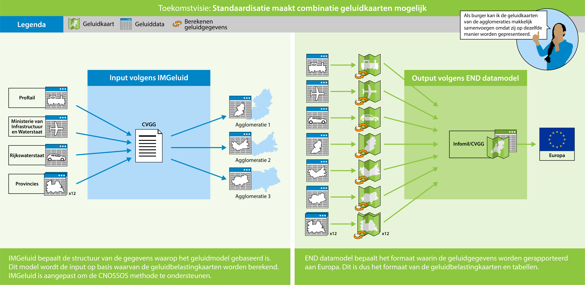
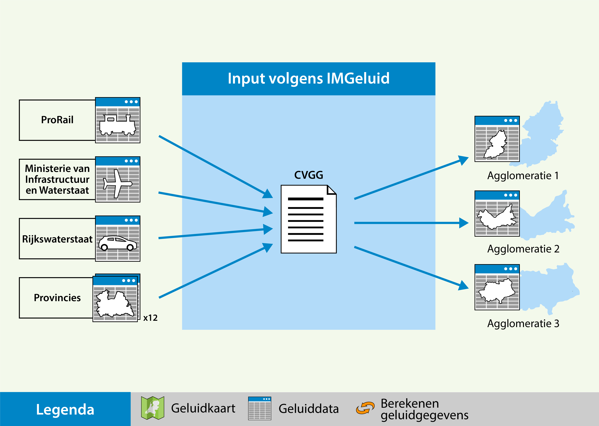
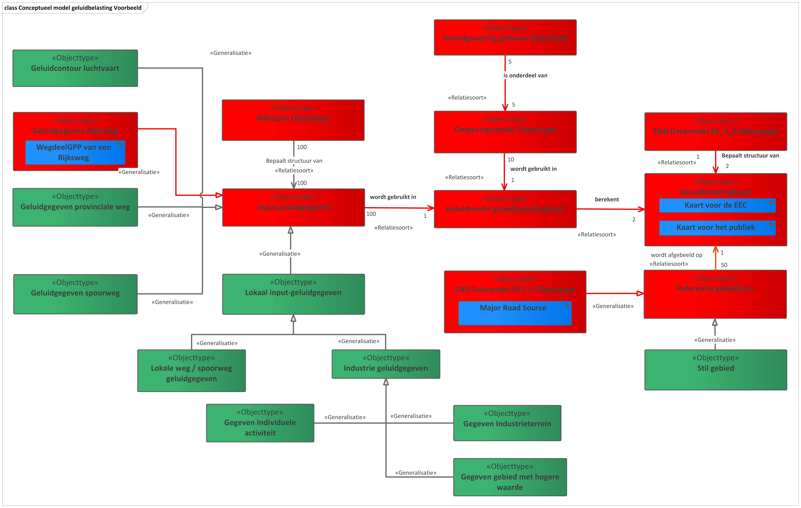

Creative Commons Attribution 4.0 International Public License (CC-BY)
Geluidbelastingkaarten in kaart
De richtlijnen, de informatiestromen en een toekomstperspectief
Samenvatting
Aanleiding
Aanleiding voor dit document was de wens van IenW/DLCE om het IMGeluid uit te
breiden met een onderdeel voor geluidbelastingkaarten, ter voorbereiding op een
mogelijke uitbreiding van de Centrale voorziening geluidgegevens (CVGG). Dit
betreft een uitbreiding die niet noodzakelijk is voor het in werking kunnen
treden van de Omgevingswet, met nieuwe geluidregels, maar die wel de volgende
ronde van geluidbelastingkaarten kan ondersteunen, waarbij een nieuw datamodel
door de EU verplicht wordt gesteld, evenals het voldoen aan de Europese
richtlijn INSPIRE. Geluidbelastingkaarten moeten elke vijf jaar worden opgesteld
door het rijk, provincies en een deel van de gemeenten. Dit komt voort uit de
Europese richtlijn omgevingslawaai. De volgende ronde vindt plaats in 2022, met
geluidgegevens over het kalenderjaar 2021. Gedurende het project is gebleken dat
het beter bij de behoefte van de opdrachtgever past om een Conceptueel
model op te stellen, dat kan dienen als basis voor enerzijds het
gebruik van het nieuwe END-datamodel door betrokken partijen, en anderzijds
eventuele uitbreidingen van het IMG, die naar verwachting beperkt of niet nodig
zullen zijn.
Om de geluidbelastingkaarten te kunnen maken, worden er tussen verschillende
overheden geluidbrongegevens uitgewisseld en worden bewerkingen op de gegevens
uitgevoerd. Deze informatiestromen van geluidbrongegevens moeten in kaart worden
gebracht. Wanneer dit nodig is om de gegevensuitwisseling optimaal te
ondersteunen, krijgen deze geluidbrongegevens een plek binnen het IMGeluid. Dit
document omvat een verslag van de gedurende het project opgehaalde informatie en
omschrijft de informatiestromen. In het Conceptueel model
Geluidbelasting geeft ook een overzicht van waar relevante informatie voor het
maken van een geluidbelastingkaart vandaan kan worden gehaald.
Scope
Doel van dit document:De samenhang tussen informatiestromen met betrekking
op het opstellen en rapporteren van geluidbelastingkaarten in kaart brengen.
In scope van dit document is:
Een analyse van informatiestromen tussen de verschillende overheden die een
rol spelen bij de aanlevering van geluidbelastingkaarten ten behoeve van de
richtlijn omgevingslawaai.
Wanneer er in het algemeen over geluidbelastingkaarten wordt gesproken in
dit document, wordt gedoeld op de geluidbelastingkaarten en – tabellen zoals
bedoeld in de richtlijn omgevingslawaai.
Een analyse van de informatiestromen voor de bewerkingsstappen
(berekeningen, samenvoegen).
Een samenvatting van het END Datamodel en de verschillen met de bestaande
formats, waarbij ook de link wordt uitgelegd met INSPIRE.
Een omschrijving van de huidige en toekomstige situatie.
Een omschrijving van een conceptueel model geluidbelasting dat inzicht geeft
in informatiestromen en de rol en herkomst van geluidgegevens met betrekking
op geluidbelastingkaarten en -tabellen.
Actieplannen vallen buiten de scope.
Status van dit document
Deze paragraaf beschrijft de status van dit document ten tijde van publicatie. Het is mogelijk dat er actuelere versies van dit document bestaan. Een lijst van Geonovum publicaties en de laatste gepubliceerde versie van dit document zijn te vinden op https://www.geonovum.nl/geo-standaarden/alle-standaarden.
Dit is een definitief concept van de nieuwe versie van de algemeen. Wijzigingen naar aanleiding van consultaties zijn doorgevoerd.
1. Inleiding
1.1 Positie van het IMGeluid
In de toekomst is het mogelijk wenselijk om ook geluidgegevens ten behoeve van
geluidbelastingkaarten en tabellen te kunnen uitwisselen via de CVGG. Het
IMGeluid is een logisch informatiemodel
dat onlosmakelijk verbonden is met de CVGG. Wanneer besloten wordt dat de CVGG
geschikt moet zijn voor uitwisseling van deze gegevens, zal het IMGeluid moeten
worden uitgebreid. Om de precieze uitbreiding van het IMGeluid te kunnen
bepalen, is het nodig om het Informatiemodel Geluid te positioneren binnen de
informatiestromen voor het rapporteren van geluidbelastingkaarten aan de
Europese commissie. Om hierbij de juiste afwegingen te kunnen maken, zal eerst
de huidige situatie in kaart worden gebracht. Dit is gedaan op basis van input
opgehaald uit een reeks interviews.
Deze interviews omvatten het perspectief van alle groepen belanghebbenden die
door het Ministerie van Infrastructuur en Waterstaat (I&W) geïdentificeerd zijn.
Sommige van deze groepen komen overeen met het aangemerkte bestuursorgaan.
Andere groepen komen overeen met de bronhouders van geluigegevens. In Tabel 1
staan deze groepen stakeholders omschreven.
Naam groep stakeholders
Omschrijving
Rolomschrijving binnen de END
Rijkswaterstaat (RWS)
Rijkswaterstaat is het uitvoerende agentschap van het Ministerie van Infrastructuur en Waterstaat. RWS beheert onder andere de Rijkswegen.
RWS is bronhouder m.b.t. geluidgegevens voor Rijkswegen. Daarnaast heeft het RWS onderdeel InfoMil de opdracht van I&W om de rapportage aan Europa te regelen.
ProRail
ProRail is de spoorwegbeheerder van Nederland. ProRail is daarbij verantwoordelijk voor het gehele spoorwegnet: aanleg, onderhoud, beheer en veiligheid.
ProRail is bronhouder m.b.t. geluidgegevens voor hoofdspoorwegen.
Provincies
De Nederlandse provincies vormen de bestuurslaag tussen de rijksoverheid en de Nederlandse gemeenten. Het Europese deel van Nederland is verdeeld in twaalf provincies die elk hun eigen volksvertegenwoordiging en bestuur hebben.
De provincies zijn bestuursorgaan en bronhouder m.b.t. Provinciale wegen, luchthavens van regionale betekenis en lokale spoorwegen met een verkeersintensiteit van meer dan 30.000 treinen per jaar.
Agglomeratie-gemeenten
Agglomeraties zijn verzamelingen van gemeenten zoals bedoeld in art. 2.40 Omgevingsregeling. Een Agglomeratie-gemeente is een gemeente die onderdeel uitmaakt van een agglomeratie.
Agglomeratie-gemeenten zijn bestuursorgaan m.b.t. geluidgegevens t.b.v. voor wegen, spoorwegen, activiteiten, verzamelingen van activiteiten en luchthavens. (zoals bedoeld in artikel 10.22 en 10.23 van Bkl) Voor een deel van deze gegevens is de Gemeente geen bronhouder. Deze gegevens moeten worden opgevraagd bij andere bronhouders.
Ministerie van Infrastructuur en Waterstaat. (I&W)
Het ministerie van Infrastructuur en Waterstaat (IenW) is verantwoordelijk voor verkeer en waterstaat, ruimtelijke ordening en leefbaarheid. Het thema geluid valt hier onder. I&W is de opdrachtgever voor de Centrale Voorziening Geluidgegevens en voor de uitbreiding van het IMGeluid.
Afdeling DG Luchtvaart en Maritieme Zaken is bestuursorgaan op het gebied van de END verplichtingen rondom luchthavens van nationale betekenis. Daarnaast is I&W bestuursorgaan voor hoofdspoorwegen en rijkswegen. Daarnaast is I&W eigenaar van de CVGG.
Rijksinstituut voor Volksgezondheid en Milieu (RIVM)
Het Rijksinstituut voor Volksgezondheid en Milieu is een kennis- en onderzoeksinstituut in Nederland, gericht op de bevordering van de volksgezondheid en een gezond en veilig leefmilieu. Het RIVM heeft ook een afdeling gespecialiseerd in omgevingslawaai en is beheerder van de Centrale Voorziening Geluidgegevens (CVGG).
Adviesbureaus / Omgevingsdiensten
Adviesbureaus en omgevingsdiensten hebben experts in dienst op het gebied van geluidberekeningen en kunnen worden ingehuurd door bronhouders.
De adviesbureaus en omgevingsdiensten maken de geluidmodellen in opdracht van bronhouders en berekenen de geluidbelastingkaarten.
InfoMil
Kenniscentrum InfoMil is de plaats waar de informatie over omgevingsrecht en omgevingsregelgeving wordt gebundeld en verspreid. Het is de plaats voor informatievoorziening en kennisuitwisseling tussen de beleidsmakers van ministeries en de beleidsuitvoerders bij provincies, gemeenten, waterschappen en milieudiensten. Het biedt praktische ondersteuning bij uitvoering van omgevingsbeleid. Met inwerkingtreding van de Omgevingswet gaat InfoMil op in Informatiepunt Leefomgeving
Kenniscentrum InfoMil verzorgt in opdracht van het ministerie IenW de rapportage aan Europa volgens, in overeenstemming met de END. Voor dat doel biedt InfoMil gemeenten en provincies handvatten voor het opstellen van de geluidbelastingkaarten en actieplannen. InfoMil bewaakt ook de voortgang bij het voldoen aan deze deadlines. In de huidige situatie verzamelt InfoMil ook de informatie over de geluidbelastingkaarten.
Centrale Voorziening Geluidgegevens
Het Rijksinstituut voor Volksgezondheid en Milieu (RIVM Rijksinstituut voor Volksgezondheid en Milieu) werkt aan de Centrale Voorziening Geluidgegevens (CVGG). Dit wordt vanaf 1 januari 2022 het digitale systeem voor het uitwisselen van geluidgegevens. Het rijk, provincies, gemeenten en waterschappen zullen via de CVGG hun geluidgegevens gaan delen. De gegevens in de CVGG zijn in eerste instantie vooral geschikt voor professionele gebruikers ter ondersteuning van akoestisch onderzoek. Het uiteindelijk doel is om samen met bronhouders en andere belanghebbenden geluidgegevens voor iedereen op één plaats, laagdrempelig en uniform beschikbaar te stellen.
Geluidbelastingkaarten en – tabellen zijn tot op heden buiten scope van de CVGG. Het RIVM is bezig met een impact analyse om een mogelijke scope verbreding te verkennen.
Leveranciers geluidberekening software
Deze leveranciers ontwikkelen en beheren de software ter ondersteuning van het uitvoeren van geluidberekeningen. Hiermee voeren de akoestische experts in opdracht van de bestuursorganen geluidberekeningen uit. De twee grootste leveranciers zijn WinHavik en Geomilieu.
De leveranciers zorgen ervoor dat hun software de geluid rekenregels toepast en dat de geluidbelastingkaarten in het gewenste formaat komen te staan.
Tabel 1. geluidbelastingkaarten en -tabellen stakeholders
Het beeld dat uit deze interviews is voortgekomen, is in afstemming met het
ministerie van I&W en het RIVM tot stand gekomen. In het volgende hoofdstuk zal
eerst de huidige situatie worden toegelicht. Vervolgens zullen enkele relevante
scenario’s voor de toekomst worden toegelicht. Een verdere uitwerking van de
informatiestromen die bij deze toekomstvisie horen zullen worden omschreven in
het Conceptueel Model Geluidbelastingkaarten. (CMGeluidbelasting) In het
CMGeluidbelasting zal ook een globaal beeld worden geschetst welke aanpassingen
er worden voorzien in het IMGeluid.
1.2 Onderscheid input en output
Binnen het domein van geluidberekeningen kan een onderscheid gemaakt worden
tussen input- en output-geluidgegevens. De geluidberekeningen worden uitgevoerd
binnen rekenpakketten met de mogelijkheid om verschillende bestandsformaten te
importeren en exporteren. De softwareleveranciers van de twee meest gebruikte
softwarepakketten Geomileu en WinHavik, ondersteunen het importeren en
exporteren van IMGeluid bestanden. Hiermee worden andere bestandsformaten echter
niet uitgesloten. Zo zou het bijvoorbeeld ook mogelijk zijn een optie in te
bouwen te exporteren naar pdf of een shapes formaat. Om deze reden kunnen de
formaten van input en output van geluidberekeningen apart worden bekeken.
Met het formaat van de input bedoelen we bijvoorbeeld de volgorde waarop
verkeersintensiteiten zijn gerangschikt. De geluidsoftware weet niet uit
zichzelf de juiste verkeersintensiteit te herkennen, daarom moet alles op een
vaste plek te vinden zijn. Met de output bedoelen we bijvoorbeeld de
geluidbelastingkaarten. Deze geluidbelastingkaarten kunnen voor ontsluiting naar
het publiek worden geëxporteerd als bijvoorbeeld een pdf of shape formaat. Voor
rapportage aan de EEA (European Environmental Agency) moet dit formaat voldoen
aan het END-Datamodel.
Het rekenhart van de geluidsoftware zorgt ervoor dat van een correcte input een
correcte output wordt gemaakt. Met een “correcte output” bedoelen we
bijvoorbeeld een geluidbelastingkaart die berekend is volgens de CNOSSOS-EU
rekenmethode (Bijlage VII Reken- en meetvoorschrift geluid 2012, Bijlage XXXIII
Omgevingsregeling). Het IMGeluid kan zowel input- als outputbestanden bevatten.
1.3 Verschil tussen berekeningen t.b.v geluidmonitoring en -belasting
Voor geluidmonitoring in het kader van de naleving van geluidproductieplafonds
en de basisgeluidemissie zal gebruik worden gemaakt van de Nederlandse
rekenmethode voor geluid zoals omschreven in de bijlagen van de
aanvullingsregeling geluid. De doelen van de aanvullingsregeling geluid zijn:
het voorkomen van de onbeheerste groei van geluidbelastingen op geluidgevoelige
gebouwen, het verlagen van bestaande hoge geluidbelastingen op geluidgevoelige
gebouwen, het bevorderen van bronbeleid, het eenvoudiger maken van het
normenkader en het stroomlijnen en makkelijker maken van de instructieregels.
Daarnaast bevat de aanvullingsregeling ook nieuwe regels m.b.t. het hoofdspoor.
(Bron: Informatiepunt
leefomgeving)
Om de geluidbelasting voor het maken van geluidbelastingkaarten te berekenen
gaat gebruik worden gemaakt van de Europese CNOSSOS rekenmethode. Deze
geluidbelastingkaarten worden opgesteld t.b.v. de Europese richtlijn
omgevingslawaai. Het doel van de richtlijn omgevingslawaai is, om op basis van
prioriteiten, de schadelijke gevolgen (inclusief hinder) van blootstelling aan
omgevingslawaai te vermijden, voorkomen of verminderen. (Bron: richtlijn
omgevingslawaai 2002l)
Geluidproductieplafonds en de basisgeluidemissie zijn instrumenten om de
geluidemissie, oftewel de geluidproductie van geluidbronnen te monitoren.
Geluidbelastingkaarten zijn een instrument om zicht te krijgen op de
geluidbelasting, de geluidimmissie, van de omgeving. Deze instrumenten maken
gebruik van verschillende waarden. Geluidemissie en -immissiewaarden hebben
ieder een eigen bepalingsmethode. Daarnaast, zal een geluidmodel t.b.v.
geluidproductieplafonds en de basisgeluidemissie, de vergunde situatie
weergeven, terwijl een geluidbelastingkaart of een geluidmodel voor monitoring
van de geluidproductieplafonds, de gerealiseerde situatie weergeeft. Dit kan als
gevolg hebben dat de geluidbrongegevens verschillen per bepalingsmethode.
Aangezien de CVGG voor verschillende doelen informatie moet kunnen verstrekken,
kan de CVGG ook geluidbrongegevens voor verschillende bepalingsmethoden
bevatten. Wel moet dan traceerbaar zijn bij welke bepalingsmethode de
geluidbrongegevens horen.
1.4 Environmental Noise Directive (END) Datamodel en informatiemodel geluid (imgeluid)
Het END Datamodel is ontwikkeld om te voldoen aan de rapportageverplichtingen
gespecificeerd in de richtlijn omgevingslawaai voor de lidstaten van de Europese
Unie. Het huidige rapportagemechanisme waarin lidstaten gegevens rapporteren, is
niet in overeenstemming met de INSPIRE-richtlijn. Daarom wordt door het Europees
Milieuagentschap (European Environment Agency) een nieuw Datamodel ontwikkeld
dat zowel aan de END- als aan de INSPIRE-eisen voldoet.
Het informatiemodel Geluid (IMGeluid) beschrijft de semantiek van digitale
bestanden voor de Centrale Voorziening Geluidgegevens. De Centrale Voorziening
Geluidgegevens (CVGG) is een centraal punt voor het eenduidig uitwisselen van
akoestische gegevens tussen bronhouders en gebruikers voor verschillende
geluiddomeinen. In IMGeluid staan de afspraken en technische eisen waaraan de
geluidbrongegevens en berekende geluidwaarden, zoals geluidproductieplafonds en
monitoringswaarden, moeten voldoen. Deze gegevens geven de juridische
werkelijkheid weer en worden gebruikt voor vergunningen en monitoring. IMGeluid
is gemodelleerd conform het Nederlandse Metamodel Informatie Modellering [MIM](
<https: docs.geostandaarden.nl="" mim="">) en volgt daarmee niet het INSPIRE
Generic Conceptual
Model
Hoewel de geluidgegevens voor rapportage aan EU (Noise Sources DF1_5 volgens END
datamodel) en t.b.v. monitoring in het kader van geluidproductieplafonds
(volgens IMGeluid) veel op elkaar lijken, is er een fundamenteel verschil. Het
volgende hoofdstuk zullen de Noise Sources nader worden toegelicht. Dit
fundamentele verschil bestaat omdat Noise Sources hoeven niet te worden gebruikt
als input voor het berekenen van geluidbelastingkaarten. De Noise sources zijn
bedoeld om een idee te geven van de ligging en intensiteit van de fysieke
geluidbron, bijvoorbeeld in de vorm van een weg. Bij de geluidgegevens met
betrekking tot monitoring gaat het niet om de fysieke geluidbron, maar de
akoestische eigenschappen van de geluidbron. Zo wordt bijvoorbeeld het IMGeluid
objecttype WegdeelGPP opgedeeld op basis van homogene akoestische eigenschappen
van het verkeer op een weg, terwijl de ligging van een Major Road Source hier
niet van afhankelijk is. Daarnaast kan WegdeelGPP kan ook wegen bevatten
waarvoor wel een projectbesluit is genomen, maar die feitelijk nog niet bestaan
(zoals de Blankenburgverbinding en de A13A16 Rotterdam). De twee zullen veelal
bij elkaar in de buurt liggen, maar een semantische relatie tussen de twee
bestaat niet. Hier ook aangeven dat er wel een relatie is tussen de gegevens
voor monitoring en de gegevens die RWS, ProRail en provincies moeten aanleveren
aan agglomeratiegemeenten voor hun berekening van de geluidbelastingkaarten.
Voor de geluidbelastingkaarten wordt geluidimmissie berekend, dit geeft de
geluidbelasting op een ontvanger (bijv. geluidbelasting op de gevel van een
huis) aan. In het kader van geluidproductieplafond- en
basisgeluidemissieberekeningen is de geluidemissie, de geluidproductie van de
geluidbron, het belangrijkst. Daarom wordt de omgeving maar beperkt meegenomen.
Bij het berekenen van geluidbelastingkaarten wordt een meer gedetailleerd
omgevingsmodel gebruikt. Dit omgevingsmodel bevat (3D) informatie over de
omliggende gebouwen en het terrein.
1.5 Leeswijzer
Dit document is gestructureerd in 6 hoofdstukken.
Hoofdstuk 2 bevat achtergrondinformatie over de verschillende richtlijnen.
Hoofdstuk 3 bevat een overzicht van het nieuwe END Datamodel.
Hoofdstuk 4 omschrijft de huidige situatie rondom de rapportage van geluidbelastingkaarten en tabellen.
Hoofdstuk 5 omschrijft een toekomstperspectief rondom de rapportage van geluidbelastingkaarten en -tabellen.
Hoofdstuk 6 bevat het Conceptueel Model Geluidbelasting en een aantal oplossingsrichtingen die daaraan ten grondslag liggen.
De richtlijn omgevingslawaai 2002/49/ EG (END) definieert
rapportageverplichtingen voor de beoordeling en beheersing van omgevingslawaai.
Met de introductie van de nieuwe ‘Verordening 2019/1010 van de Europese Unie
(EU) [3] moeten de lidstaten de gegevens ter beschikking stellen zoals vereist
op grond van de END-richtlijn en volgens, in overeenstemming met de
INSPIRE-uitvoeringsbepalingen zoals verwoord in de INSPIRE-richtlijn 2007/2/EG
(zie Richtlijn INSPIRE). Het huidige rapportagemechanisme waarin
de lidstaten gegevens aanleveren, is niet in overeenstemming met de
INSPIRE-richtlijn. Daarom is door het Europees Milieuagentschap een nieuw
datamodel ontwikkeld dat voldoet aan zowel de END- als de INSPIRE-vereisten.
Dit hoofdstuk geeft een korte toelichting over de richtlijn omgevingslawaai, de
INSPIRE-richtlijn en geeft een overzicht van het nieuwe datamodel dat is
ontwikkeld voor de richtlijn omgevingslawaai om te voldoen aan de vereisten
volgens de INSPIRE-richtlijn en de daarbij behorende INSPIRE
dataspecificaties. In 2.3 en 2.4 worden
de richtlijn omgevingslawaai (END) en richtlijn INSPIRE toegelicht. In
hoofdstuk 3 staat het nieuwe datamodel dat voor de richtlijn
omgevingslawaai (END) ontwikkeld is beschreven. Paragraaf 3.3
bevat een mapping van ruimtelijke data uit het END Datamodel op INSPIRE
ruimtelijke thema's.
2.2 Naam en Acroniemen
END - Environmental Noise Directive: dit is de richtlijn inzake de evaluatie
en beheersing van omgevingslawaai. (richtlijn omgevingslawaai)
INSPIRE - INfrastructure for SPatial InfoRmation in Europe: dit is de
richtlijn tot oprichting van een infrastructuur voor ruimtelijke informatie in
de Gemeenschap. (Inspire)
2.3 Richtlijn omgevingslawaai
Het doel van de richtlijn omgevingslawaai is: “een gemeenschappelijke aanpak te
bepalen om op basis van prioriteiten de schadelijke gevolgen en hinder van
blootstelling aan omgevingslawaai te vermijden, te voorkomen of te verminderen
”. Om dat te bereiken, moet het niveau van geluidhinder vastgesteld worden en de
nodige maatregelen getroffen worden, zowel op lidstaat- als EU-niveau.
Het nieuwe END-Datamodel is ontwikkeld om de rapportage door de lidstaten in een
gemeenschappelijk formaat te vergemakkelijken en ervoor te zorgen dat zowel aan
de rapportagevereisten van het END als aan INSPIRE wordt voldaan.
De richtlijn omgevingslawaai is van toepassing op geluid waaraan mensen worden
blootgesteld, met name in de bebouwde kom, in openbare parken of andere stille
gebieden in een agglomeratie, in stille gebieden in het open gebied, in de buurt
van scholen, ziekenhuizen en andere geluidgevoelige gebouwen en gebieden.
Het is niet van toepassing op geluid dat wordt veroorzaakt door de blootgestelde
persoon zelf, geluid van huishoudelijke activiteiten, geluid van buren, geluid
op werkplekken, of geluid binnen vervoermiddelen of door militaire activiteiten
in militaire gebieden.
De richtlijn omgevingslawaai bevat verschillende bepalingen die de lidstaten
verplichten om informatie aan de Europese Commissie (EC) te verstrekken over
o.a. de voorbereiding en publicatie van strategische geluidbelastingkaarten en
actieplannen voor geluidbeheer voor:
Alle wegen, spoorwegen, luchthavens en industrieterreinen binnen
agglomeraties met meer dan 100.000 inwoners
Belangrijke wegen (meer dan 3 miljoen voertuigen per jaar)
Belangrijke spoorwegen (meer dan 30.000 treinen per jaar)
Belangrijke luchthavens (meer dan 50.000 bewegingen handelsverkeer per
jaar).
Om de gestelde doelen uit de richtlijn omgevingslawaai na te streven, richt de
END zich in het bijzonder op het bepalen van de blootstelling aan
omgevingslawaai, het waarborgen van informatie over omgevingslawaai en de
effecten ervan voor het publiek, het voorkomen en verminderen van
omgevingslawaai waar nodig, en het behouden van de kwaliteit van het
omgevingslawaai waar het goed is.
2.4 Richtlijn INSPIRE
Met de komst van ‘INfrastructure for SPatial Information in Europe’ (INSPIRE) in
2007 wordt op Europees niveau gewerkt aan de beschikbaarheid en
uitwisselbaarheid van geo-informatie voor het sneller en beter ondersteunen van
milieuvraagstukken. De Europese richtlijn INSPIRE leidt tot een Europese
geo-informatie infrastructuur welke onder andere bijdraagt aan verbeterde
informatievoorziening in grens overstijgende beleids- en
dienstverleningsprocessen.
INSPIRE verplicht de Europese lidstaten om ruimtelijke gegevens over 34 thema’s
digitaal vindbaar, bruikbaar en uitwisselbaar te maken. Om dit mogelijk te maken
worden de datasets en diensten gestandaardiseerd en voorzien van metadata. Voor
de vindbaarheid van de gegevens realiseren de Commissie en de lidstaten een
netwerk dat bestaat uit een Europees INSPIRE Geoportal dat
verbonden is met nationale portalen met netwerkdiensten. In Nederland is het
Nationaal Georegister (NGR) het nationale portaal.
In 2017 heeft de Europese Commissie een fitness check afgerond over
Environmental Monitoring en Reporting. Daarbij is de INSPIRE-richtlijn
aangewezen als instrument met een groot potentieel om het rapportageproces over
milieurichtlijnen te stroomlijnen. Vanuit INSPIRE is vervolgens aan de lidstaten
gevraagd om ervoor te zorgen dat voor e-reporting relevante datasets via INSPIRE
beschikbaar komen. De Europese Commissie heeft samen met de EEA een lijst
opgesteld van prioritaire datasets rondom e-reporting. De lijst bevat o.a. de
ruimtelijke data met betrekking tot en gerapporteerd onder de richtlijn
omgevingslawaai.
2.4.1 Wat zijn INSPIRE-verplichtingen?
De INSPIRE-dataproviders moeten ervoor zorgen dat de ruimtelijke gegevens
(dataset) van de juiste beschrijvingen zijn voorzien (metadata), dat ze conform
de INSPIRE datamodellen (geharmoniseerd) beschikbaar zijn en dat ze als
netwerkservice worden ontsloten.
2.4.1.1 Metadata
Elke dataset en netwerkservice dient te worden voorzien van metadata waarmee de
dataset c.q. netwerkservice wordt beschreven. Deze metadata wordt gepubliceerd
in het nationale portaal, het NGR. INSPIRE heeft juridisch bindende
eisen die aan de inhoud en structuur van de metadata worden
gesteld. In Nederland zijn deze INSPIRE vereisten voor metadata verwerkt in de
Nederlandse metadataprofielen voor data en services.
2.4.1.2 Netwerkservices
De netwerkservices dienen voor de ontsluiting van de INSPIRE-datasets. Er dienen
minimaal twee netwerkservices beschikbaar te komen voor de INSPIRE-datasets:
Een Viewservice, waarmee de gegevens op een kaart op het web kunnen worden
getoond.
Een Downloadservice, waarmee de gegevens via het web zijn uit te wisselen.
Er zijn verschillende typen view- en downloadservices mogelijk, afhankelijk van
de data en de voorkeuren van de dataprovider. Aanvullend op de internationale
OGC-standaarden voor deze services, zijn er vanuit INSPIRE specifieke juridisch
bindende vereisten waaraan deze services moeten voldoen. Deze vereisten zijn
uitgewerkt in technische specificaties, waarmee deze vereisten
geïmplementeerd kunnen worden. In Nederland is afgesproken dat de dataproviders
services implementeren, in overeenstemming met deze technische specificaties.
2.4.2 INSPIRE datamodellen over inhoud en uitwisseling van data
Voor alle 34 INSPIRE thema’s is in juridisch bindende vereisten vastgelegd,
welke data op welke wijze moeten worden uitgewisseld. Voor elk thema is een
bindend datamodel opgesteld met objecten (featuretypes), attributen, datatypes,
waarde lijsten etc. Daarnaast zijn er bindende afspraken over het formaat waarin
uitgewisseld wordt, de encoding1 en het te gebruiken coördinaat referentie
systeem. Ook zijn de laagnamen en stijlen voor de verbeelding in de viewservice
vastgelegd.
Er zijn ook afspraken over identifier management, de manier waarop geometrie kan
worden vastgelegd en hoe er wordt omgegaan met tijdelijkheid. Ook zijn er
aanwijzingen over thema specifieke metadata. In de 34
dataspecificaties is uitgewerkt hoe deze vereisten geïmplementeerd
kunnen worden. In Nederland is afgesproken dat de dataproviders de data
harmoniseren volgens, in overeenstemming met deze technische specificaties.
2.5 Algemene Termen en definities
Lijst van termen en definities die in deze beschrijving worden gehanteerd,
gesorteerd op alfabetische volgorde. Verder aanvullend hierop wordt de
terminologie van het MIM en
IMGeluid gevolgd.
Term
Definitie
Agglomeratie (Agglomeration)
Deel van een grondgebied, afgebakend door de lidstaat, met een bevolking van meer dan 100.000 personen en een bevolkingsdichtheid zodanig dat de lidstaat het als een verstedelijkt gebied beschouwt [END]. De Nederlandse Agglomeraties zijn in de Omgevingsregeling aangewezen.
Omgevingslawaai (Environmental noise)
Ongewenst of schadelijk buitengeluid veroorzaakt door menselijke activiteiten, met inbegrip van geluid afkomstig van transportmiddelen, wegverkeer, treinverkeer, luchtverkeer en van locaties van industriële activiteit zoals gedefinieerd in bijlage I bij Richtlijn 96/61/ EG van de Raad van 24 September 1996 betreffende geïntegreerde preventie en bestrijding van verontreiniging [END].
Data flows
Datastromen gerapporteerd door EEA-leden en samenwerkende landen
Een door de lidstaat aangewezen burgerluchthaven met meer dan 50.000 bewegingen per jaar (een beweging zijnde een start of een landing), exclusief die voor trainingsdoeleinden op lichte vliegtuigen [END].
Belangrijke spoorwegen (Major railway)
Een spoorweg, aangewezen door de lidstaat, die meer dan 30.000 treinpassages per jaar heeft [END].
Belangrijke wegen (Major road)
Een door de lidstaat aangewezen regionale, nationale of internationale weg waarop jaarlijks meer dan drie miljoen voertuigen passeren [END].
Geluidactieplan (Noise action plan
Een plan om geluidproblemen en -effecten te beheersen, inclusief geluidreductie indien nodig [END]. In de END-scope kunnen geluidactieplannen verwijzen naar geïdentificeerde grote geluidbronnen, agglomeraties, stille gebieden of andere specifieke geluidsituaties. De verwijzing wordt geleverd door object-ID's of rechtstreeks als ruimtelijke gegevens.
Stil gebied in agglomeratie(Quiet area in an agglomeration)
Een gebied, afgebakend door de bevoegde instantie, bijvoorbeeld dat niet wordt blootgesteld aan een waarde van Lden of van een andere geschikte geluidbelasting indicator die hoger is dan een bepaalde waarde die door de lidstaat is vastgesteld, afkomstig van enige geluidbron [END].
Stil gebied in buitengebied (Quiet area in open country)
Een door het bestuursorgaan afgebakend gebied dat niet wordt gestoord door verkeerslawaai, industrie of recreatie [END].
Strategische geluidkaart (Strategic noise map)
Een kaart die is ontworpen voor de algemene beoordeling van de blootstelling aan lawaai in een bepaald gebied als gevolg van verschillende geluidbronnen of voor algemene voorspellingen voor een dergelijk gebied [END].
Geluid contourkaart (Noise contour map)
Presenteert de gegevens over een bestaande of voorspelde geluidsituatie in termen van een geluidbelasting indicator, met vermelding van overschrijding van een relevante geldende grenswaarde, het aantal getroffen mensen in een bepaald gebied of het aantal woningen dat wordt blootgesteld aan bepaalde waarden van een geluidbelasting indicator in een bepaald gebied. Geluidcontouren maken deel uit van de strategische geluidbelastingkaarten. In de END-scope kunnen geluidcontourkaarten worden gepresenteerd als gebieden of isolijnen.
Bevoegde instantie (Competent authority)
Organisatie(s) verantwoordelijk voor het beheren, beperken of reguleren van maatregelen of activiteiten met betrekking tot omgevingslawaai binnen aangewezen agglomeraties, volgens de definitie in de INSPIRE ' Implementing Rules on Interoperability' [END].
Voidable
Voor een attribuut- of associatierol kan de waarde ‘void’ ingevuld worden als er geen overeenkomstige waarde is opgenomen in de dataset die door de lidstaten worden bijgehouden of als er geen overeenkomstige waarde kan worden afgeleid uit bestaande waarden tegen redelijke kosten. Als een attribuut- of associatierol niet voidable is, wordt de tabelcel die de voidability specificeert leeg gelaten [INSPIRE].
2.6 Algemene Symbolen en afkortingen
Afkortingen
Betekenissen
AM
Area Management
CMGeluidbelasting
Conceptueel Model Geluidbelasting
DF
Data flow
EEA
European Environment Agency
END
Environmental Noise Directive
HH
Human Health
IATA
International Air Transport Association
ICAO
The International Civil Aviation Organization
LAU
Lokale administratieve eenheden
LBE
Lokale bestuurlijke eenheden
MS
Member State
NAP
Noise Action Plan
NUTS
Nomenclature of Territorial Units for Statistics
TN
Transport networks
3. END-Datamodel
3.1 Het nieuwe END-Datamodel
Het END-Datamodel is ontwikkeld om te voldoen aan de rapportageverplichtingen
die in de END richtlijn zijn gespecificeerd. Het is ontwikkeld om de rapportage
door de lidstaten in een gemeenschappelijk formaat te vergemakkelijken.
Tegelijkertijd verwijzen verschillende INSPIRE-thema’s naar use-cases rondom
omgevingslawaai, waaronder de rapportage in kader van de END. Daarom zijn
verschillende overwegingen in acht genomen bij de ontwikkeling van het nieuwe
END-datamodel:
Om te zorgen voor overeenstemming met beide richtlijnen, betreffende de
END-rapportagecycli en de volledige implementatie-routekaart van de
INSPIRE-richtlijn,
Om een meervoudige verstrekking van ruimtelijke gegevens op grond van de
END- en INSPIRE-richtlijn te voorkomen of op zijn minst te minimaliseren en
zorgen voor een beter gebruik van nationale infrastructuur voor ruimtelijke
informatie,
Om de harmonisatie en het hergebruik van gegevens te vergroten, fragmentatie
van gegevensstromen te verminderen,
En om nieuwe functionaliteiten van het Reportnet 3.0-platform volledig te
benutten, zoals een mogelijkheid voor rapportage op regionaal niveau of voor
gegevensverzameling, bijvoorbeeld door gebruik te maken van
INSPIRE-netwerkdiensten (nog in ontwikkeling).
De scope van het END-datamodel betreft een reeks gegevens die op grond van de
END aan de Europese Commissie moeten worden gerapporteerd. Tegelijkertijd omvat
het datamodelmodel ruimtelijke data die conceptueel overeenkomen met diverse
INSPIRE-thema’s.
Daarom is om te komen tot het nieuwe END-datamodel het eerdere END-datamodel en
rapportagemechanisme gebruikt als uitgangspunt voor de gegevensmodellering en
als bron van definities van de END-specifieke gegevensvereisten. De
INSPIRE-dataspecificaties zijn gebruikt als bron van een gemeenschappelijke
methodologie voor datamodellering en definities van INSPIRE-concepten.
Figuur 1Proces van content matching tussen END en INSPIRE om END informatiemodel te ontwikkelen
3.2 END datamodel rapportage overzicht
Het nieuwe END-informatiemodel omvat voor elke rapportageverplichting een apart
informatiemodel. De informatiemodellen, die ruimtelijke informatie bevatten,
zijn een combinatie van de INSPIRE-datamodellen en de specifieke END-vereisten.
Daarnaast zijn enkele andere modelconcepten, o.a. uit de
INSPIRE-dataspecificaties, gebruikt in verschillende informatiemodellen, zoals
bijvoorbeeld identificatoren, geharmoniseerde datatypen of voorgestelde
alternatieve vereenvoudigde gegevenstypen.
Een schematisch overzicht van het volledige END-datamodel (zie figuur 2) geeft
het gebruik en de combinatie van ruimtelijke data en de gestructureerde
tabelgegevens aan met basisrelaties tussen individuele datamodellen (en de
rapportage gegevensstromen).
Figuur 2Combinatie van data flows in het END-informatiemodel [4]
Het END-Datamodel omvat alle rapportageverplichtingen op grond van de END. In
het model zijn al deze verplichtingen aangemerkt als domeinen. Ieder domein
heeft een eigen UML-diagram (UML: Unified Modeling Language). Een UML-diagram
voor een specifiek domein noemen we een domeinmodel.
De volgende domeinenmodellen zijn gedefinieerd:
Geluidbronnen (DF1_5): hoofdwegen, grote spoorwegen, grote luchthavens en
agglomeraties, zoals gedefinieerd in de END;
Bevoegde instantie (DF2): informatie over bevoegde autoriteiten, en/of
andere instanties die verantwoordelijk zijn voor de uitvoering van de
richtlijn omgevingslawaai;
Grenswaarden (DF3): bepaling van eventuele nationale of lokale grenswaarden
voor geluid;
Strategische geluidbelastingkaart (DF4_8): met informatie over:
Gegevens over blootstelling aan lawaai: geschat aantal mensen dat in
gebieden woont die de END-geluidrapportagedrempels overschrijden;
Geluidcontouren: geven de ruimtelijke omvang van de geluidniveaus weer voor
verschillende geluidbelasting indicatoren;
Lawaaibeheersing programma’s (DF6_9): informatie over
geluidbeheersingsprogramma's die in het verleden zijn uitgevoerd en
getroffen geluidmaatregelen
Geluid actieplannen en Stille gebieden (DF7_10): informatie over
Actieplannen om geluidproblemen en de gevolgen daarvan te verminderen en te
beheersen;
Bescherming en behoud van stille gebieden in agglomeraties of in open
gebied.
De domeinmodellen zijn met elkaar verbonden en maken het mogelijk om de data uit
de verschillende rapportageverplichtingen te combineren.
Voor de geluidbronnen (DF1_5) moet de ligging van wegen, spoorwegen,
luchthavens en agglomeraties van elk land in geografisch formaat worden
gerapporteerd, inclusief een aantal akoestische eigenschappen die invloed hebben
op de totale geluidproductie. Van alle akoestische eigenschappen moet
uitsluitend de jaarlijkse verkeersstroom in DF1_5 worden gerapporteerd. Voor
wegverkeer behoren verkeerssamenstelling, snelheden en wegdeksoort daar niet toe
en voor spoorwegen en luchthavens geldt iets soortgelijks. Het verschil tussen
de geluidbronnen (DF1_5) en de geluidgegevens met betrekking tot monitoring in
IMGeluid is uitgelegd in 1.3.
Voor de rapportage van bevoegde instanties (DF_2) zijn geen ruimtelijke gegevens
nodig. De bevoegde instanties van wegen en spoorwegen, die verantwoordelijk zijn
voor de geluidbelastingkaarten en/of de actieplanning, kunnen worden
gerapporteerd op landniveau of op weg-/ spoorsegmentniveau [1] (door
middel van identificatoren). Bevoegde instanties van grote luchthavens moeten
worden geïdentificeerd met behulp van ICAO-codes en bevoegde instantie van
agglomeraties met behulp van agglomeratie-identificatoren. Bevoegde instantie
die belast is met de bescherming van stille gebieden mag optioneel worden
aangeleverd, maar het wordt aanbevolen om dit te rapporteren door stilte
gebiedsidentificaties te gebruiken.
De grenswaarden van een land of een gedefinieerde rapporteringsregio (DF3)
vereisen geen ruimtelijke informatie. De grenswaarden kunnen op landenniveau
gerapporteerd worden en het is mogelijk om deze grenswaarden apart voor elke
geluidbron of gezamenlijk voor alle bronnen te rapporteren.
De strategische geluidbelastingkaarten (DF4_8) bestaan uit twee soorten
gegevens. De geluidcontouren worden aangeleverd als ruimtelijke data en dienen
aangeleverd te worden met een gesloten lijngeometrie of een polygoon. De
gegevens over de blootstelling van de bevolking aan een verhoogd geluidniveau,
zijn gekoppeld aan ruimtelijke eenheden en kunnen op verschillende
rapportageniveaus worden verstrekt: voor hoofdwegen en spoorwegen kan worden
gerapporteerd op landniveau of met behulp van kleinere territoriale eenheden.
Voor grote luchthavens moeten de gegevens worden gerapporteerd door middel van
de ICAO-code met de mogelijkheid om de blootstelling van de bevolking op lokale
administratieve eenheden (LAU)-niveau weer te geven. De informatie over de
blootstelling van de bevolking binnen agglomeraties voor wegen, spoorwegen,
industrie, hoofdwegen binnen een agglomeratie of grote spoorwegen binnen een
agglomeratie, kan worden gerapporteerd op agglomeratieniveau of door middel van
gebruikmaking van LAU-eenheden. De blootstelling van de bevolking voor
luchthavens of grote luchthavens binnen agglomeraties, kan op agglomeratieniveau
of op LBE-niveau worden gerapporteerd, samen met de respectieve ICAO-code
wanneer informatie over grote luchthavens wordt gerapporteerd.
Lawaaibeheersing programma’s (DF6_9) vereisen geen ruimtelijke gegevens en
kunnen via verschillende rapportageniveaus worden ingediend.
De geluid actieplannen (DF7_10) vereisen de rapportage van ruimtelijke
informatie in de vorm van een polygoon. De informatie van het actieplan moet
worden ingevuld voor elke polygoon of multipolygoon waarvoor het actieplan wordt
opgesteld. Voor grote luchthavens is de ICAO-code ook vereist. Voor belangrijke
wegen en belangrijke spoorwegen is dit een polygoon van Nederland. Voor Schiphol
zou dat misschien ook de meest logische keuze zijn als de koppeling met de
ICAO-code dan kan worden gemaakt.
Stille gebieden zijn opgenomen in de gegevensrapportage DF7_10 en vereisen
rapportage van een polygoon van het gebied dat wordt beschermd tegen
omgevingslawaai. Op nationaal niveau bestaan er twee verschillende stille
gebieden. Dit zijn stille gebieden binnen agglomeraties en stille gebieden in
open gebied. Voor stille gebieden binnen agglomeraties is het vereist om de
agglomeratie-identificatiecode te specificeren. In de praktijk hebben de
agglomeraties tot nu toe nog geen stille gebieden aangewezen. De stille gebieden
in open gebied, ook wel stiltegebieden genoemd, worden door provincies
aangewezen.
3.3 END mapping naar INSPIRE thema's
De INSPIRE-thema’s en bijbehorende dataspecificaties richten zich op de algemene
kenmerken van ruimtelijke data, die toepasbaar kunnen zijn voor verschillende
use cases. Rapportageverplichtingen zijn daar slechts een voorbeeld van. Daarin
bevatten de INSPIRE-informatiemodellen, gespecifieerd in de dataspecificaties,
meestal algemene informatie, zoals unieke identificatoren en de geometrie van
ruimtelijke objecten, informatie over de levenscyclus van ruimtelijke objecten
met betrekking tot datamanagementprincipes en een reeks andere basiskenmerken
die ruimtelijke objecten beschrijven, zoals naam of specifieke categorie.
Aan de andere kant zijn de gerapporteerde gegevens onder de END-richtlijn
specifiek ontworpen om te voldoen aan de rapportageverplichtingen en -criteria
die door de END zijn gedefinieerd. Deze eisen dienen goed te worden gecombineerd
met de basis INSPIRE-informatiemodellen voor ruimtelijke data.
De lijst met geïdentificeerde ruimtelijke data in het toepassingsgebied van de
END-richtlijn heeft betrekking op de volgende INSPIRE-thema’s, zie onderstaande
tabel. Deze ruimtelijke data dienen ook volgens INSPIRE-vereisten zie 2.4
ontsloten te worden.
Tabel 1. Overzicht van het mapping van ruimtelijke data van END naar de
INSPIRE-thema’s
Basis for END spatial data
INSPIRE spatial data thema
INSPIRE spatial object type
Belangrijke wegen (DF1_5)
INSPIRE Transport networks (TN) and specific Road Transport Network
RoadLink
Belangrijke spoorwegen (DF1_5)
INSPIRE Transport networks (TN) and specific Railway Transport Network
RailwayLink
Belangrijke luchthavens (DF1_5)
INSPIRE Transport networks (TN) and specific Air Transport Network
AerodromeNode
Agglomeraties (DF1_5)
INSPIRE Area management / restriction / regulation zones & reporting units (AM)
ManagementRestrictionOrRegu lationZone
Geluid contourkaart (DF4_8)
INSPIRE Human health and safety (HH)
EnvHealthDeterminantMeasure (*)
Stille gebieden in agglomeraties of in buitengebied (DF7_10)
INSPIRE Area management / restriction / regulation zones & reporting units (AM)
ManagementRestrictionOrRegu lationZone
Geluid actieplannen (DF7_10)
INSPIRE Area management / restriction / regulation zones & reporting units (AM)
ManagementRestrictionOrRegu lationZone
* Het INSPIRE-Datamodel is opgenomen in de herziening van de uitvoeringsregels
inzake interoperabiliteit.
4. Huidige situatie: geluidbelastingkaarten en -tabellen
Figuur 3Huidige situatie rondom rapportage van END geluidbelastingkaarten en-tabellen gevisualiseerd.
Om een beeld te schetsen van de huidige situatie zal de situatie worden
omschreven van de laatste rapportage van geluidgegevens aan de Europese
commissie. Zoals eerder vermeld, is iedere Europese lidstaat verplicht deze
rapportage te doen op basis van de Europese richtlijn
omgevingslawaai. Op basis van de uitgevoerde analyse,
bureauonderzoek en interviews kan worden opgemaakt dat het huidige proces
rondom de rapportage van geluidbelastingkaarten aan Europa op te delen is in
drie deelprocessen. Deze drie deelprocessen staan ook gevisualiseerd in Figuur 3 van links naar rechts.
Het verzamelen van geluidgegevens en berekenen van geluidbelastingkaarten en
tabellen.
Het centraal aanleveren van geluidbelastingkaarten aan InfoMil.
Het prepareren van een rapportage aan de Europese commissie door InfoMil.
Binnen deze deelprocessen worden de informatiestromen zichtbaar gemaakt. In dit
hoofdstuk zal per deelproces hier aandacht aan worden besteed.
4.1 Input Verzamelen van geluidgegevens en berekenen van geluidbelastingkaarten en tabellen
Figuur 4Input Verzamelen van geluidgegevens en berekenen van geluidbelastingkaarten en -tabellen.
De eerste stap in de het huidige proces voor de rapportage van
geluidbelastingkaarten aan de Europese Commissie, is het verzamelen van de
juiste gegevens om een geluidmodel mee te kunnen maken. Wat de juiste gegevens
zijn wordt bepaald door akoestisch adviseurs in dienst van de bronhouder, een
adviesbureau of een omgevingsdienst binnen de kaders van de Nederlandse
rekenmethodieken voor het uitvoeren van geluidberekeningen. Deze zullen vanaf ingang vanaf de omgevingswet te vinden zijn in Bijlage IV van de omgevingsregeling.
ProRail, het Ministerie van Infrastructuur en Waterstaat, Rijkswaterstaat en
provincies genereren de geluidcontouren en tabellen voor belangrijke wegen,
spoorwegen en luchthavens buiten agglomeraties. Daarnaast leveren zij een deel
van de input-geluidgegevens voor het genereren van geluidcontouren en tabellen
binnen agglomeraties. Voor het samenstellen van een geluidmodel moeten
agglomeratie-gemeenten veel stappen ondernemen. Agglomeraties hebben volgens de
Europese richtlijn omgevingslawaai de plicht om
geluidbelastingkaarten en -tabellen te berekenen. In deze kaarten en tabellen
moet de geluidbelasting afkomstig van industrie, provinciale wegen,
hoofdspoorwegen, lokale wegen, hoofdwegen en de luchtvaart worden meegenomen.
Deze gegevens zijn voor een groot deel in beheer bij andere bronhouders,
waardoor er veel informatiestromen ontstaan. Echter, niet voor alle
geluidbelastingkaarten is gegevensuitwisseling vereist. ProRail en RWS
beschikken bijvoorbeeld zelf over de meeste benodigde geluidbrongegevens om
geluidbelastingkaarten op te stellen. Naast de gegevens waar ProRail en RWS zelf
over beschikken, moet er ook een omgevingsmodel worden gemaakt in een strook van
ongeveer 1 km langs het netwerk. Om dit omgevingsmodel te kunnen samenstellen,
zijn ook gegevens over de ligging van stille gebieden en geluidgevoelige
gebouwen nodig.
Het aantal informatiestromen wordt ook beïnvloed door het feit dat er
organisatorisch geen agglomeratiebestuur bestaat in Nederland. In Nederland
heeft iedere gemeente die hoort bij een agglomeratie de plicht om zelfstandig
een geluidbelastingkaart en -tabel voor haar grondgebied op te stellen.
Samenwerking en onderlinge uitwisseling van gegevens tussen
agglomeratiegemeenten onderling en met provincies, komen voor op lokaal
initiatief. Dit wordt weergegeven in Figuur 4 aan de hand
van verschillende kleuren en kaartjes. Op dit moment werkt het rijk aan
harmonisatie van gegevens door een 3D-omgevingsmodel voor geluid, het Nationaal
Wegenbestand (NWB), en onderzoek of een landelijk bestand met
verkeersintensiteiten haalbaar is. Formeel zijn er tot nog toe geen vaste
afspraken op landelijk niveau rondom de beschikbaarstelling van geluidgegevens
voor geluidbelastingkaarten. In de praktijk worden op initiatief van InfoMil
werkafspraken gemaakt rondom het beschikbaar stellen van geluidgegevens.
Daarnaast is er contact tussen de RWS-bronbeheerder en agglomeratie-gemeenten
wanneer er informatiebehoeften zijn. Wanneer een agglomeratie-gemeente
bijvoorbeeld de informatiebehoefte heeft Rijkswegen toe te voegen aan het
geluidmodel, wisselt RWS deze gegevens op aanvraag in Geomileu-formaat uit. Door
het ontbreken van formele afspraken, weet een agglomeratiegemeente niet van
tevoren wanneer deze gegevens klaar zullen zijn om te worden gedeeld.
4.2 Centraal rapporteren van kaarten aan InfoMil
Figuur 5Centraal aanleveren van kaarten aan InfoMil.
Wanneer de geluidbelastingkaarten berekend zijn, worden deze gerapporteerd aan
InfoMil. In het geval van luchthavens van nationaal belang, rijkswegen en
hoofdspoorwegen buiten agglomeratiegrenzen, draagt het Ministerie van I&W de
verantwoordelijkheid over de rapportage aan InfoMil. De geografische kaarten
worden door de bevoegde autoriteit publiek beschikbaar gesteld. Alle
agglomeratiegemeenten rapporteren zelfstandig geluidbelastingkaarten en
-tabellen aan InfoMil. In Artikel 8 van besluit geluid milieubeheer staat dat geluidbelastingkaarten bestaan uit tabellen en geografische kaarten.
In artikel 11.9 van de Wet Milieubeheer
staat de aanleverplicht voor deze geluidbelastingkaarten omschreven. De
aanleverplicht moet nog worden verankerd in de Omgevingswet. Een verschil tussen
publieke geluidbelastingtabellen en de tabellen voor de EEA, is dat op
bijvoorbeeld de publieke tabel voor Rijkswegen ook de geluidbelasting binnen
agglomeratiegrenzen is meegenomen. Op de geografische geluidbelastingkaarten
voor de EEA worden ook Rijkswegen binnen agglomeratiegrenzen meegenomen. Volgens
de richtlijn omgevingslawaai is het alleen verplicht voor belangrijke wegen,
spoorwegen en luchthavens van nationaal belang om geografische
geluidbelastingkaarten te rapporteren. Voor de geluidbelastingkaarten voor het
publiek, gelden een aantal aanvullende eisen vanuit Nederlandse wetgeving boven
op de eisen uit de richtlijn omgevingslawaai. Een overzicht van deze eisen valt
te vinden in Bijlage 1.
4.3 Output prepareren van een rapportage aan de Europese commissie
Figuur 6Output prepareren van een rapportage aan de EEA.
In het laatste deelproces zorgt Infomil ervoor dat de door bronhouders
aangeleverde gegevens worden verwerkt tot een rapport aan de Europese Unie.
Hierbij moeten de verschillende geluidbelastingtabellen van
agglomeratiegemeenten worden samengevoegd tot een enkele tabel per agglomeratie.
De geluidbelastingkaarten worden zo goed als mogelijk samengevoegd en
gerapporteerd, maar deze kan nooit geheel compleet zijn, aangezien niet ieder
formaat geluidbelastingkaart met een ander kan worden samengevoegd.
5. Toekomstperspectief: geluidbelastingkaarten en -tabellen

Figuur 7Toekomstvisie rondom rapportage van geluidbelastingkaarten en -tabellen gevisualiseerd.
De opdrachtgever I&W heeft verschillende scenario’s voor de toekomst van
geluidberekeningen met betrekking tot geluidbelastingkaarten uitgewerkt. Het
gaat hier om scenario’s waar centraal rekenen bij de CVGG in verschillende mate
een rol speelt. In het toekomstperspectief wordt op basis van de interviews een
invulling gegeven aan de situatie na de komst van het END Datamodel. In dit
perspectief ligt de nadruk op het scenario waar decentraal wordt gerekend, maar
dit betekent niet dat centraal rekenen geen denkbaar scenario blijft voor de
toekomst. In dit beeld zijn de wensen van de opdrachtgever I&W en geïnterviewde
stakeholders meegenomen. Onder dit toekomstperspectief ligt een aantal
afwegingen. Bij deze afwegingen wordt er gestreefd naar een zo effectief
mogelijke uitkomst, waarbij zowel technische als bestuurskundige aspecten zijn
meegenomen. Technische aspecten en bestuurskundige aspecten hangen vaak met
elkaar samen. Zo kan een standaard die complex is in beheer, bijvoorbeeld ook
voor veel extra kosten zorgen. In dit hoofdstuk zal het toekomstperspectief
worden omschreven. De rationale achter deze afwegingen, is te vinden in het
CMGeluidbelasting.
In Figuur 7 staat een toekomstperspectief afgebeeld
zoals uit interviews naar voren is gekomen. Het proces voor het aanleveren van
geluidbelastingkaarten en -tabellen valt op te delen in drie deelprocessen:
Het verzamelen van geluidgegevens en berekenen van geluidbelastingkaarten en
tabellen.
Het centraal aanleveren van geluidbelastingkaarten aan de CVGG.
Het aanleveren van een rapportage aan de Europese commissie door de CVGG en
InfoMil.
5.1 Input verzamelen van geluidgegevens volgens IMGeluid

Figuur 8Input Verzamelen van geluidgegevens volgens IMGeluid.
ProRail, Rijkswaterstaat, de provincies en I&W verzamelen gegevens voor het
berekeningen van geluidbelastingkaarten en tabellen. Daarnaast, zoals op de
linker plaat valt te zien, leveren ze deze gegevens ook aan CVGG. De
agglomeratie-gemeenten kunnen de CVGG gebruiken om geluidgegevens af te nemen
die, naast hun eigen verzamelde gegevens, dienen als input voor het berekenen
van geluidbelastingkaarten. Het gaat hierbij respectievelijk om geluidgegevens
t.b.v. hoofdspoor, rijkswegen, provinciale wegen en luchthavens. De partijen die
agglomeraties vertegenwoordigden in de interviews, gaven de indicatie dat het
centraal aanleveren van geluidbrongegevens t.b.v. geluidbelastingkaarten een
beperkt voordeel voor agglomeratie gemeenten oplevert. Daarentegen vergt het
weer een extra inspanning van de rijksbronbeheerder om de geluidbrongegevens op
te moeten “knippen”, met de kans op fouten. Het hele netwerk uitleveren kost
volgens de rijksbronbeheerder de minste moeite. De afwegingen hierachter, worden
nader toegelicht in de memo in hoofdstuk 6.
De geluidgegevens ten behoeve van het berekenen van geluidbelastingkaarten zijn
een aparte verzameling van gegevens met een eigen geluidmodel. Voor het grootste
deel is de opbouw van deze brongegevens hetzelfde als voor monitoring, maar er
zijn verschillen. Bijlage 2 geeft een samenvatting van deze
verschillen. Wanneer er in de toekomst voor een optie wordt gekozen met centraal
aanleveren, moeten deze geluidbrongegevens apart worden aangeleverd. Dit is
noodzakelijk aangezien twee verschillende rekenmethode hiervoor worden gebruikt.
Het IMGeluid zal in dit geval kunnen worden uitgebreid om deze aparte
aanlevering te ondersteunen. De geluidgegevens die door de agglomeratiegemeenten
worden gebruikt, kunnen in een formaat volgens, in overeenstemming met IMGeluid
uit de CVGG worden gehaald om vervolgens te importeren in hun rekenpakket.
5.2 Centraal rapporteren van kaarten aan de CVGG
Figuur 9Centraal aanleveren van kaarten aan de CVGG.
De geluidbelastingkaarten worden berekend door de bronhouders. Het rekenpakket
zorgt ervoor dat de output van een geluidbelastingberekening kan worden
geëxporteerd volgens, in overeenstemming met het END Datamodel in GeoPackage
formaat. Het idee was dat de verschillende bronhouders dit bestand vervolgens
via het uploadportaal van de CVGG uploaden. Echter bleek uit een impactanalyse
van het RIVM, dat deze uitbreiding van de CVGG voor de huidige tranche niet
realiseerbaar is.
5.3 Centraal rapporteren van kaarten en tabellen aan de EEA en het publiek
Er is een belangrijk verschil tussen de geluidbelastingkaarten die voor de
burgers worden gemaakt en de geluidbelastingkaarten die voor de EU worden
gemaakt: het rijk en de provincies nemen in de kaarten voor burgers ook de
gegevens op van de (spoor)wegen die liggen in agglomeraties, maar in de
geluidbelastingtabellen voor de EEA worden deze gegevens weggelaten om dubbele
waarden te voorkomen. Dit zou in de toekomst vanuit een enkele
geluidbelastingkaart gedaan worden, door de agglomeraties automatisch uit de
kaarten van de rijksbronbeheerder te knippen. Daarnaast hebben kaarten voor het
publiek meer duiding en context nodig. Hoe deze context goed in beeld kan worden
gebracht, wordt geduid vanuit de wetgeving. Zie bijlage 1 voor een
duiding van deze gegevens.
Mogelijk kan de CVGG InfoMil gaan ondersteunen bij het rapportageproces van
geluidbelastingkaarten. Dit zou kunnen door het uploadportaal van de CVGG
geschikt te maken voor het END-Datamodel. Op het moment van publicatie van dit
rapport moet de CVGG stuurgroep hier nog een besluit over nemen.
Het conceptuele model geluidbelasting (CMGeluidbelasting) brengt in kaart welke
gegevens een rol kunnen gaan spelen in de toekomstige situatie. Ook positioneert
het CMGeluidbelasting de Objecttypen uit het END-Datamodel en IMGeluid. Voor dit
model zijn twee aannames gemaakt. De mogelijke opties staan toegelicht in
paragraaf 6.2. In dit hoofdstuk worden de objecttypen gedefinieerd en
toegelicht. Het CMGeluidbelasting is een concept kijk op de toekomst. Het doel
van het model is om een overzicht te geven op waar relevante informatie voor het
maken van een geluidbelastingkaart vandaan kan worden gehaald. Dit model wordt
gebruikt om de specifieke uitbreidingen die nodig zijn voor het IMGeluid te
bepalen.
Wat opvalt is dat het model vanuit een hoger
niveau
naar de informatie kijkt dan het IMGeluid. Voor het doel van dit model is het
niet nodig om meer gedetailleerd te kijken naar de verschillende objecttypen.
Zie **figuur 10** voor een UML weergave van het
CMGeluidbelasting.
6.1 Toelichting op CM Geluidbelasting
In het CM Geluidbelasting staat het Geluidmodel centraal. Op basis van dit model
wordt een geluidbelastingkaart en -tabel berekend. De structuur van deze
geluidbelastingkaart of -tabel, wordt bepaald door DF4 en DF8 van het END
Datamodel. In de geschetste situatie bevat een geluidmodel minstens één
geluidgegeven. Dit geluidgegeven zou uit de CVGG kunnen worden gehaald, wanneer
er op termijn wordt besloten deze ook via de CVGG uit te wisselen. De structuur
van dit Input-geluidgegeven kan in dit geval bepaald worden door IMGeluid. Dit
Input-geluidgegeven kan in deze situatie afkomstig zijn van een rijksweg, een
provinciale weg, een spoorweg, van een agglomeratie-gemeente of van een
luchthaven.
Wanneer het geluidmodel betrekking heeft op een agglomeratie gemeente, zullen
lokale geluidgegeven over wegen, spoorwegen, industrie en overige
geluidbelastende activiteiten worden gebruikt in het geluidmodel. Het
geluidmodel bevat ook een model van de omgeving. In dit omgevingsmodel zitten
bijvoorbeeld hoogtelijnen en geluidgevoelige gebouwen. Deze kunnen door de maker
van het geluidmodel zelf gemodelleerd worden of op een andere manier worden
ingewonnen. Een oplossingsrichting is om een lijst met geluidgevoelige gebouwen
op te nemen in het IMGeluid. Zie voor andere oplossingsrichtingen de Memo over
geluidgevoelige gebouwen.
De cijfers die bij pijlen (relaties) van het type <<relatiesoort>> staan in
de vorm [0…*] (Multipliciteiten), maken het mogelijk om het model op
verschillende manieren te doorlopen. Deze Multipliciteiten geven grenzen aan van
hoe vaak het ene object mag verwijzen naar het andere object in de relatie.
Bijvoorbeeld: 1 of meerdere [1..*] input geluidgegeven(s) worden gebruikt in 0
of meerdere [0..*] Geluidmodellen. Het andere type relatie dat wordt gebruikt
in het CMGeluidbelasting is de <<generalisatie>>. Deze relatie wordt gelegd
tussen twee Objecttypen om aan te geven dat het ene object generaliseerd in het
andere. Een geluidgegeven Rijksweg is bijvoorbeeld een specifiek soort
Input-geluidgegeven.
Om deze principes toe te lichten zullen we het CM Geluidbelasting een keer
geheel doorlopen voor de geluidbelastingkaarten van Rijkswegen. Zie Figuur 11
voor een visualisatie hiervan. We beginnen linksboven in het model bij het
Objecttype Geluidgegeven Rijksweg. Laten we er voor dit voorbeeld vanuit gaan
dat we een geluidbelastingkaart willen maken van 100 wegdelen. Om te bepalen hoe
deze wegdelen eruitzien, kijken we naar het IMGeluid object WegdeelGPP in dit
hypothetische geval. In dit geval is ieder WegdeelGPP een Input-geluidgegeven
dat wordt gebruikt in een geluidmodel. De relatiesoort tussen de objecttypen
Input-geluidgegeven en Geluidmodel geluidbelastingkaart geeft nu aan dat 100
wegdelen worden gebruikt in 1 geluidmodel. De Multipliciteiten die hier gelden
staan dit toe. Vervolgens worden er 5 geluidgevoelige gebouwen toegevoegd aan
het omgevingsmodel en 5 omgevingsmodel objecten (dit zouden bijvoorbeeld
hoogtelijnen kunnen zijn) om de omgeving te modelleren. Deze 10 objecten worden
toegevoegd aan het geluidmodel. Uit dit ene geluidmodel worden 2 verschillende
kaarten berekend. Eén kaart is voor de Lden situatie en één voor de Lnight
situatie. De geluidcontouren op beide kaarten worden opgeslagen volgens, in
overeenstemming met het Objecttype (featureType) met de naam
“EnvHealthDeterminantMeasure” afkomstig uit het END Datamodel (zie figure 41.
Streamlined data model for noise contour maps (DF4_8)). Bij een
geluidbelastingkaart horen ook gegevens over blootstelling aan lawaai. De kaart
voor het publiek wordt door Rijkswaterstaat nog aangevuld met een aantal
Referentie geluidbronnen. Deze referentie geluidbronnen bevatten extra
informatie over de context die handig is voor het publiek. De ligging van 49
major Road Source Objecttypen wordt op de kaart afgebeeld samen met de
afbakening van een stil gebied.

Figuur 11Voorbeeld uitwerking van het Conceptueel model geluidbelasting.
6.2 Het inwinningsvraagstuk voor aanvullende informatie op publieke geluidbelastingkaarten
In hoofdstuk 5 werd al genoemd dat I&W meerdere denkbare scenario’s heeft
uitgewerkt voor de toekomst van geluidberekeningen met betrekking tot
geluidbelastingkaarten. Een scenario waar in dit rapport nog minder aandacht aan
is besteed, is het centraal berekenen van geluidbelastingkaarten. In dit
scenario kan de CVGG centraal geluidbelastingkaarten berekenen. In dit scenario
hoeven de bronhouders alleen de geluidgegevens waarover zij zelf beschikken aan
te leveren en doet de CVGG de rest. Maar deze geluidgegevens moeten dan wel
volledig en precies volgens het IMGeluid worden aangeleverd. Het belangrijkste
werk is daarmee al verricht. Dit scenario zal aantrekkelijk worden, wanneer het
met forse besparing op de rekentijden gepaard zal gaan, of met besparing op
licentiekosten voor rekensoftware. Dit scenario betekent ook dat de CVGG over
voldoende informatie moet beschikken, om geluidbelastingkaarten voor het publiek
op te stellen.
Geluidbelastingkaarten voor het publiek bevatten vaak nog aanvullende gegevens
om de kaart beter leesbaar te maken. Dit zijn bijvoorbeeld gegevens over de
ligging van industrieterreinen of andere geluidbelastende activiteiten. Wanneer
in de toekomst voor dit scenario wordt gekozen, is het daarom ook belangrijk om
na te denken over het inwinningsvraagstuk dat achter deze gegevens zit. Mogelijk
kunnen alle aanvullende gegevens uit het DSO (Digitaal Stelsel Omgevingswet)
worden ingewonnen, maar dit is tot op heden onzeker. Het blijft daarom een optie
dat deze ontbrekende gegevens, optioneel worden opgenomen in het IMGeluid.
6.3 Definities CMGeluidbelasting
6.3.1 Objecttype CVGG Input Geluidgegeven
6.3.2 Objecttype CVGG Input Geluidgegeven
Naam
Input-geluidgegeven
Definitie
Geluidgegeven dat wordt gebruikt in een geluidmodel voor geluidbelastingkaarten te berekenen, dat kan worden afgenomen vanuit de CVGG.
Toelichting
Het gaat hier om geluidgegevens m.b.t. rijkswegen, provinciale wegen, lokale wegen, spoorwegen, industrie en Luchtvaart. De structuur van deze gegevens wordt binnen de uitbreiding van het IMGeluid gespecificeerd.
Abstract
Ja. Dit betekent dat dit modelelement niet op zichzelf bestaat, maar dat het altijd een GeluidgegevenRijksweg, GeluidgegevenProvincialeWeg, GeluidgegevenHoofdpoorweg of een GeluidcontourLuchtvaart betreft.
Herkomst
CMGeluidbelasting
6.3.3 Objecttype Geluidgegeven rijksweg
Naam
Geluidgegeven Rijksweg
Definitie
Geluidgegeven afkomstig van een stukje rijksweg met een verkeersintensiteit van meer dan 3 miljoen motorvoertuigen per jaar, dat wordt gebruikt in een geluidmodel voor geluidbelastingkaarten te berekenen.
Toelichting
Het gaat hier om geluidgegevens die Rijkswaterstaat in beheer heeft. Deze gegevens zijn wat betreft betekenis (semantiek) anders dan de gegevens in WegdeelGPP uit IMGeluid, dus zullen een eigen objecttype moeten krijgen binnen IMGeluid. Dit zal waarschijnlijk gaan om een aangepaste versie van GPPWegdeel. Dit objecttype heeft een aangepaste definitie en bevat een aantal extra attribuutsoorten om te kunnen rekenen met de CNOSSOS rekenmethode.
Abstract
Nee.
Herkomst
CMGeluidbelasting
6.3.4 Objecttype Geluidgegeven Provinciale Weg
Naam
Geluidgegeven provinciale weg
Definitie
Geluidgegeven afkomstig van een stukje provinciale weg met een verkeersintensiteit van meer dan 3 miljoen motorvoertuigen per jaar, dat wordt gebruikt in een geluidmodel voor geluidbelastingkaarten te berekenen.
Toelichting
Het gaat hier om geluidgegevens die een Provincie in beheer heeft. Deze gegevens zijn wat betreft betekenis (semantiek) anders dan de gegevens in WegdeelGPP uit IMGeluid, dus zullen een eigen objecttype moeten krijgen binnen IMGeluid. Dit zal waarschijnlijk gaan om een aangepaste versie van GPPWegdeel. Dit objecttype heeft een aangepaste definitie en bevat een aantal extra attribuutsoorten om te kunnen rekenen met de CNOSSOS rekenmethode.
Abstract
Nee.
Herkomst
CMGeluidbelasting
6.3.5 Objecttype Geluidgegeven spoorweg
Naam
GeluidgegevenSpoorweg
Definitie
Geluidgegeven afkomstig van een stukje hoofdspoorweg, of een Lokale spoorwegen met een verkeersintensiteit van meer dan 30.000 treinen per jaar, dat wordt gebruikt in een geluidmodel voor geluidbelastingkaarten te berekenen.
Toelichting
Het gaat hier om geluidgegevens die ProRail in beheer heeft in het geval van Hoofdspoorwegen. De provincies beheren Lokale spoorwegen met een verkeersintensiteit van meer dan 30.000 treinen per jaar. Deze gegevens zijn wat betreft betekenis (semantiek) anders dan de gegevens in SpoordeelGPP uit IMGeluid, dus zullen een eigen objecttype moeten krijgen binnen IMGeluid. Dit zal waarschijnlijk gaan om een aangepaste versie van SpoordeelGPP. Dit objecttype heeft een aangepaste definitie en bevat een aantal extra attribuutsoorten om te kunnen rekenen met de CNOSSOS-rekenmethode.
Abstract
Nee.
Herkomst
CMGeluidbelasting
6.3.6 Objecttype Geluidcontour Luchtvaart
Naam
GeluidcontourLuchtvaart
Definitie
Geluidcontour afkomstig van burgerluchthavens van nationale betekenis met meer dan 50.000 vliegtuigbewegingen, oefenvluchten met lichte vliegtuigen niet meegerekend.
Toelichting
Het gaat hier om geluidcontouren opgevraagd door afdeling DG Luchtvaart en Maritieme Zaken van het Ministerie van Infrastructuur en Waterstaat, bij burgerluchthavens met nationale betekenis. Aangezien het bij geluidbrongegevens voor luchtvaart vaak gaat om commercieel gevoelige informatie, hoeven alleen de contouren gebruikt te worden als input voor een geluidberekening. Deze contouren kunnen worden opgeslagen in de CVGG als een nieuwe aanlevering in overeenstemming met IMGeluid. Een nieuwe aanlevering is nodig omdat het in dit geval gaat om het gerealiseerde aantal vluchten en niet om een vergunde situatie.
Abstract
Nee.
Herkomst
CMGeluidbelasting
6.3.7 Objecttype Geluidmodel Geluidbelastingkaart
Naam
GeluidmodelGeluidbelastingkaart
Definitie
Een geluidmodel van een bepaald gebied, bestaande uit Input-geluidgegevens, dat wordt gebruikt om geluidbelastingkaarten mee te bereken.
Toelichting
Het geluidmodel wordt samengesteld door akoestisch experts volgens, in overeenstemming met de CNOSSOS-rekenmethode. Het doel van het geluidmodel is om zo goed mogelijk de geluidbelasting in een bepaald gebied te simuleren. Welk gebied dit betreft is afhankelijk van het bestuursorgaan dat de opdracht geeft om een geluidmodel te maken. Dit zou bijvoorbeeld het geluidmodel van een agglomeratie-gemeente kunnen zijn
Abstract
Nee.
Herkomst
CMGeluidbelasting
6.3.8 Objecttype Lokaal input-geluidgegeven
Naam
Lokaal input-geluidgegeven
Definitie
Geluidgegeven dat wordt gebruikt in een geluidmodel voor geluidbelastingkaarten te berekenen, opgehaald door een agglomeratie-gemeente vanuit lokale bronnen.
Toelichting
Niet alle geluidgegevens worden door agglomeraties opgevraagd bij andere overheden. Over de meeste lokale gegevens over geluidbelastende activiteiten, beschikt de gemeente zelf. In een beperkt volume vindt soms uitwisseling tussen agglomeratie-gemeenten plaats. Wanneer een agglomeratie-gemeente een geluidbelastingkaart of -tabel gaat berekenen worden deze geluidgegevens gebruikt in een geluidmodel.
Abstract
Ja. Dit betekent dat dit modelelement niet op zichzelf bestaat, maar dat het altijd wordt ingevuld door een meer specifiek objecttype. In dit geval zijn de specifiekere Objecttypen met de Generalisatie relatie zichtbaar in het model.
Herkomst
CMGeluidbelasting
6.3.9 Objecttype Industrie geluidgegeven
Naam
Industrie geluidgegeven
Definitie
Een lokaal input-geluidgegeven met betrekking tot geluidbelastende activiteiten die te maken hebben met industrielawaai.
Toelichting
Het gaat hier om geluidbelastende activiteiten en verzamelingen van activiteiten: Activiteiten op industrieterreinen met gpp’s waarvoor het geluid van dat industrieterrein meer is dan 55 dB Lden of 50 dB Lnight Activiteiten in gebieden met een hogere waarde voor geluid, waarvoor de geluidbelasting door die activiteiten op omliggende geluidgevoelige gebouwen meer kan zijn dan 55 dB Lden of 50 dB Lnight; Activiteiten buiten industrieterreinen met gpp’s met een ten hoogste toegelaten geluidbelasting door de activiteit meer is dan 55 dB Lden of 50 dB Lnight Wanneer een agglomeratie-gemeente een geluidbelastingkaart of -tabel gaat berekenen worden deze geluidgegevens gebruikt in een geluidmodel.
Abstract
Ja Dit betekent dat dit modelelement niet op zichzelf bestaat, maar dat het altijd wordt ingevuld door een meer specifiek objecttype. In dit geval zijn de specifiekere Objecttypen met de Generalisatie relatie zichtbaar in het model.
Herkomst
CMGeluidbelasting
6.3.10 Objecttype Gegeven gezoneerde industrie
Naam
Gegeven gezoneerde industrie
Definitie
Een geluidgegeven met betrekking op activiteiten op industrieterreinen met gpp’s waarvoor het geluid van dat industrieterrein meer is dan 55 dB Lden of 50 dB Lnight.
Toelichting
Tot deze gegevens behoren bijvoorbeeld geluidbronnen binnen een industrieterrein met GPP’s. Het gaat hier wel om een andere situatie dan die in de CVGG staat geregistreerd. In de CVGG staat namelijk de vergunde situatie.
Abstract
Nee.
Herkomst
CMGeluidbelasting
6.3.11 Objecttype Gegeven aangewezen gebieden
Naam
Gegeven aangewezen gebieden
Definitie
Een geluidgegeven met betrekking op activiteiten in gebieden met een hogere waarde voor geluid, waarvoor de geluidbelasting door die activiteiten op omliggende geluidgevoelige gebouwen meer kan zijn dan 55 dB Lden of 50 dB Lnight.
Toelichting
Het beeld is dat tot deze aangewezen gebieden voornamelijk horeca concentratiegebieden behoren. Echter is het toegestaan als gemeente zelf invulling te geven aan deze categorie. Het is daarom enige mate van onzekerheid over welke andere soorten aangewezen gebieden precies worden gebruikt in het werkveld.
Abstract
Nee.
Herkomst
CMGeluidbelasting
6.3.12 Objecttype Industrie geluidgegeven
Naam
Gegeven groot bedrijf
Definitie
Een geluidgegeven met betrekking op activiteiten buiten industrieterreinen met gpp’s met een ten hoogste toegelaten geluidbelasting door de activiteit meer is dan 55 dB Lden of 50 dB Lnight.
Toelichting
Het gaat hier om grote bedrijven die buiten een gezoneerd industrieterrein met GPP’s liggen. Grote bedrijven die mogelijk meer geluid produceren dan is toegestaan, moeten voor een vergunningaanvraag akoestisch onderzoek laten uitvoeren. Het beeld van I&W hierbij is daarom dat de precieze invulling van deze categorie bekend is bij de agglomeratie-gemeenten.
Abstract
Ja
Herkomst
CMGeluidbelasting
6.3.13 Objecttype Lokale weg / spoorweg geluidgegeven
Naam
Lokale weg / spoorweg geluidgegeven
Definitie
Lokaal input-geluidgegeven over geluidbelastende activiteiten die te maken hebben met lokale wegen of spoorwegen.
Toelichting
Het gaat hier om geluidgegevens met betrekking tot lokale wegen en spoorwegen waarvan een agglomeratie-gemeente bronhouder is. Deze gegevens zijn wat betreft betekenis (semantiek) anders dan de gegevens in WegdeelBGE en SpoordeelBGE uit IMGeluid, dus zullen een eigen objecttype moeten krijgen binnen IMGeluid. Dit zal waarschijnlijk gaan om aangepaste versies van SpoordeelBGE en WegdeelBGE. Deze objecttypen hebben een aangepaste definitie en bevat een aantal extra attribuutsoorten om te kunnen rekenen met CNOSSOS-rekenmethode.
Abstract
Nee.
Herkomst
CMGeluidbelasting
6.3.14 Objecttype Omgevingsmodel Objecttype
Naam
OmgevingsmodelObjecttype
Definitie
Objecttype afkomstig uit een omgevingsmodel geschikt voor geluidberekeningen.
Toelichting
Dit omgevingsmodel kan gemaakt zijn door het bestuursorgaan of er kan gebruik worden gemaakt van een landelijk model, zoals bijvoorbeeld het 3D omgevingsmodel geluid. Dit omgevingsmodel bevat ook geluidgevoellige gebouwen zoals bedoeld in Artikel 3.20 van BKL.
Abstract
Nee.
Herkomst
CMGeluidbelasting
6.3.15 Objecttype IMGeluid Objecttype
Naam
IMGeluid Objecttype
Definitie
Een objecttype afkomstig uit het Informatiemodel Geluid.
Toelichting
Dit is een objecttype uit het IMGeluid dat mogelijk kan worden gebruikt om de structuur van de input-geluidgegevens te bepalen. Deze input-geluidgegevens kunnen worden gebruikt om een geluidbelastingkaart te berekenen. Niet elk objecttype uit het IMGeluid is hiervoor geschikt. Het is afhankelijk van een keuze
Abstract
Ja. Dit betekent dat dit modelelement niet op zichzelf bestaat, maar dat het altijd een objecttype is afkomstig uit het IMGeluid.
Herkomst
IMGeluid
6.3.16 Objecttype END Datamodel Objecttype
Naam
END Datamodel DF_4_8 Objecttype
Definitie
Een objecttype afkomstig uit het datamodel van de Environmental Noise Directive.
Toelichting
In de specifieke relatie die hier zichtbaar is zou dit hier gaan om verschillende objecttypen uit de DF4_8 domeinmodellen van het END Datamodel.
Abstract
Ja. Dit betekent dat dit modelelement niet op zichzelf bestaat, maar dat het altijd een objecttype is afkomstig uit het END Datamodel.
Een objecttype dat een geluidgevoellig gebouw, zoals bedoeld in artikel 3.20 van BKL representeert, inclusief alle in de regelgeving bepaalde eigenschappen.
Toelichting
Voor de geluidgevoelige gebouwen kan de BAG als uitgangspunt worden genomen. Echter kan niet alle informatie uit de BAG worden gehaald. Waar deze informatie wel vandaan kan worden gehaald wordt omschreven in de memo.
Abstract
Nee.
Herkomst
CMGeluidbelasting
6.3.18 Objecttype Geluidbelastingkaart
Naam
Geluidbelastingkaart
Definitie
Een geluidbelastingkaart zoals bedoeld in de Environmental Noise Directive in overeenstemming met het END Datamodel.
Toelichting
De geluidbelastingkaart wordt berekend uit een GeluidmodelGeluidbelastingkaart in opdracht van bestuursorgaan. Een geluidbelastingkaart bevat de volgende gegevens:
Abstract
Nee.
Herkomst
CMGeluidbelasting
De geluidbelasting Lden en de geluidbelasting Lnight door de geluidbronnen
in het kalenderjaar voorafgaand aan dat van de vaststelling van een
geluidbelastingkaart, weer te geven met 5 dB-contouren; en
Het aantal geluidgevoelige gebouwen en bewoners van woningen dat aan bij
ministeriele regeling vastgestelde waarden van de geluidbelasting Lden en de
geluidbelasting Lnight wordt blootgesteld, weer te geven in tabellen met
geluidbelastingklassen van telkens 5 dB.
Los van de verplichte geluidbelastingkaarten en -tabellen die aan Europa moeten
worden gerapporteerd, worden er ook kaarten gemaakt om het publiek te
informeren. Voor deze kaarten voor het publiek is soms aanvullende informatie
vereist.
6.3.19 Objecttype Referentie geluidbron
Naam
Referentie geluidbron
Definitie
Een geometrische afbakening van een gebied of locatie die relevante informatie toevoegt over de geluidbron aan geluidbelastingkaarten voor het publiek.
Toelichting
Dit Objecttype bevat bijvoorbeeld de afbakening van een Industrieterrein, een horeca concentratiegebied of een ander aangewezen gebied. Een referentie gebiedsafbakening kent mogelijke een stuk meer invullingen. Binnen een geluidbelastingkaart bedoeld voor het publiek, vervult deze afbakening een informerende rol. In de geluidbelastingkaarten die aan de EEA gerapporteerd worden, spelen deze gebiedsafbakeningen geen rol. Een Referentie geluidbron is niet per se hetzelfde als een input-geluidgegeven of een geluidbrongegeven. Het gaat in dit geval namelijk niet om een geluidgegeven dat wordt gebruikt in een geluidberekening, maar om een afbakening die voor het publiek betekenisvolle informatie toevoegt over de geluidbron.
Abstract
Ja. Dit betekent dat dit modelelement niet op zichzelf bestaat, maar dat het altijd wordt ingevuld door een meer specifiek objecttype. In dit geval is het nog niet precies bekend welke specifieke referentie gebiedsaanwijzingen er worden gebruikt in het werkveld.
Herkomst
CMGeluidbelasting
6.3.20 Objecttype END Datamodel DF1_5 Objecttype
Naam
END Datamodel DF1_5 Objecttype
Definitie
Objecttype afkomstig uit het END Datamodel dat extra bruikbare informatie toevoegt voor het publiek.
Toelichting
De “Noise sources” (DF1_5) zijn objecttype afkomstig uit het END Datamodel. De Nederlandse vertaling hiervan, “geluidbronnen”, gebruiken we hier niet om verwarring te voorkomen met de input-geluidgegevens die worden gebruikt voor het berekenen van de geluidbelastingkaart.
Abstract
Nee
Herkomst
END Datamodel
6.3.21 Objecttype Stil gebied
Naam
Stil gebied
Definitie
Afbakening van een stil gebied zoals bedoeld in de Europese richtlijn omgevingslawaai.
Toelichting
Deze stille gebieden worden ook als DF7_10 gerapporteerd aan de EEA. In deze context zijn alleen de afbakening en het type stil gebied (quietAreaType) relevant voor de kaart voor het publiek.
Abstract
Nee.
Herkomst
END Datamodel
6.4 Oplossingsrichtingen ten grondslag aan het CMGeluidbelasting
In deze paragraaf staan een aantal oplossingsrichtingen omschreven die aan de
grondslag van het CMGeluidbelasting liggen. In de oplossingsrichtingen is de
opgehaalde input vanuit het werkveld opgenomen. De oplossingsrichtingen zijn omschreven in de vorm van twee memo's.
6.4.1 Memo: Centraal aanleveren van lokale geluidgegevens van agglomeratiegemeenten
Huidige situatie
Voor het samenstellen van een geluidmodel moeten vooral agglomeratiegemeenten
veel stappen ondernemen. Agglomeraties zijn volgens de Europese Richtlijn
Omgevingslawaai [bron] verplicht om geluidbelastingkaarten en -tabellen te
berekenen. In deze kaarten en tabellen moet de geluidbelasting afkomstig van
industrie, provinciale wegen, hoofdspoorwegen, lokale wegen, hoofdwegen en de
luchtvaart worden meegenomen. Deze gegevens zijn voor een groot deel in beheer
bij andere bronhouders, waardoor er veel informatiestromen ontstaan.
Gewenste situatie
De gegevens over geluidbelasting zijn landelijk gestandaardiseerd en worden
efficiënt en eenvoudig via een landelijk gestandaardiseerd proces uitgewisseld.
Hiermee bedoelen we dat gegevens over geluidbelasting uniform zijn zodat de
informatieproducten als resultaat uit de berekeningen met deze gegevens, o.m.
geluidbelastingkaarten, uniform in inhoud en kwaliteit zijn. De gegevens over
geluidbelasting worden met zo min mogelijk informatiestromen uitgewisseld.
Uitgangspunten
Agglomeratie gemeenten zijn bronhouder van lokale geluidgegevens.
Lokale geluidgegevens bestaan uit de volgende gegevens over geluidsbelasting
afkomstig van industrie, provinciale wegen, hoofdspoorwegen, lokale wegen,
hoofdwegen en de luchtvaart.
Voor ‘centraal rekenen’ aan geluidbelastingkaarten zijn lokale
geluidsgegegevens van agglomeratiegemeenten nodig.
Onder ‘centraal aanleveren’ verstaan we het leveren van gegevens aan de
CVGG.
Alternatieven en keuzes
Lokale geluidgegevens worden door agglomeratiegemeenten:
Alternatief 1. niet centraal aangeleverd.
Alternatief 2. optioneel centraal aangeleverd.
Alternatief 3. verplicht centraal aangeleverd.
Kansen en risico’s van centraal aanleveren van lokale geluidgegevens door
agglomeratiegemeenten zijn:
Met het centraal aanleveren van lokale geluidgegevens zijn we voorbereid op
centraal rekenen.
Centraal aanleveren c.q. beschikbaarstellen van lokale geluidgegevens biedt
mogelijkheden tot samenwerking zonder onderlinge informatiestromen/uitwisseling [opmerking 1].
De inname van lokale geluidgegevens moet technisch ingericht worden in de
centrale voorziening.
Lokale geluidgegevens zijn niet-uniform [opmerking 2], waardoor de inhoud en kwaliteit
van de gegevens die centraal aangeleverd en beschikbaargesteld worden,
wisselend zijn.
Er lijkt weinig draagvlak [opmerking 3] onder agglomeratiegemeenten voor het centraal
aanleveren.
De toegevoegde gebruikerswaarde is niet bekend.
Advies 1. Optioneel beginnen met centraal aanleveren en later verplichten.
Het advies is om de CVGG voor te bereiden op de inname van lokale geluidgegevens
en agglomeratiegemeenten de keuze te geven om lokale geluidgegevens optioneel
(alternatief 2) te mogen laten aanleveren aan de CVGG. [opmerking 4] Dit om meer
samenwerking en een reductie van informatiestromen te bereiken. Aandachtspunt is
de communicatie richting agglomeratie om de toegevoegde waarde van centraal
aanleveren en beschikbaarstellen te duiden. Op een later moment kan beoordeeld
worden in hoeverre een verplichting moet gaan gelden voor het centraal
aanleveren van lokale geluidgegevens (alternatief 3).
Advies 2. Lokale geluidgegevens uniformeren
Het advies is om vooraf of tegelijkertijd met het inregelen van de inname van
lokale geluidsgegevens, te onderzoeken in hoeverre deze gegevens en het proces
rond de inwinning/totstandkoming van deze gegevens gestandaardiseerd kan worden,
bijvoorbeeld op het gebied van (rekenen met) verkeersmodellen. Dit om meer
uniformiteit in inhoud en kwaliteit in de brongegevens en afgeleide
informatieproducten (geluidbelastingkaarten) te bereiken.
6.4.2 Memo: Geluidgevoelige gebouwen en geluidbelastingkaarten
Huidige situatie
Voor het maken van geluidbelastingkaarten zijn onder meer gegevens nodig over
geluidgevoelige gebouwen [opmerking 5].
Een geluidgevoelig gebouw [opmerking 6] is gedefinieerd in de Artikel 3.20 van het Besluit
kwaliteit leefomgeving (Bkl).
Om het aantal geluidgevoelige objecten te bepalen, gebruiken overheden vaak
BAG-bestanden [opmerking 7]. BAG-bestanden bevatten niet alle gegevens die nodig zijn om
alle geluidgevoelige gebouwen te identificeren [opmerking 8].
Combinatie met andere bronnen [opmerking 9]. is noodzakelijk om alle geluidgevoelige
gebouwen te bepalen.
Rijkswaterstaat en ProRail hebben een eigen bestand (voor hun interessegebied)
met geluidgevoelige gebouwen, en stellen die op verzoek beschikbaar aan
gemeenten en provincies.
Gewenste situatie
Het maken van geluidbelastingkaarten is efficiënt. Overheden kunnen eenvoudig en
eenduidig een bestand met geluidgevoelige gebouwen samenstellen of afnemen.
Uitgangspunten
De informatie over geluidgevoelige gebouwen moet eerder beschikbaar zijn dan
de geluidbelastingkaarten, zodat de gegevens ook door de beheerders van
belangrijke geluidbronnen kunnen worden gebruikt.
De gegevens over geluidgevoelige gebouwen moeten worden aangeleverd door
gemeenten, omdat in hun omgevingsplannen is bepaald welke functies zijn
toegestaan en zij de lokale kennis hebben over details als bedgebied en
kinderopvang.[opmerking 10]
Gegevens daar opslaan waar ze verzameld, opgeslagen, en beheerd worden. De
bronhouders van de BAG zijn de gemeenten. Bronhouders voor de
Geluidbelastingkaarten zijn ook de gemeenten.
De geluidbelastingkaarten hebben een actualisatie frequentie van 5 jaar. Met
dat specifieke doel voor ogen hebben, moet er dus 5-jaarlijks een actueel
bestand met geluidgevoelige gebouwen zijn. [opmerking 11]
Voor END kaarten zijn totale aantallen gebouwen en gehinderden binnen een
geluidcontour nodig. Het is niet nodig gegevens over de geluidgevoelige
gebouwen zelf op te nemen in END kaarten.
Alternatief 1 Opnemen gegevens geluidgevoelige gebouwen in de BAG
Het kenmerk ‘is geluidgevoelig’ wordt als verplicht gegeven toegevoegd aan de
BAG [opmerking 12].
Bronhouders van de BAG (gemeenten) wordt gevraagd om hun werkproces en
software hierop aan te passen, en de gegevens in te winnen en aan te leveren
aan de LV-BAG.
De gegevens over geluidgevoelige gebouwen zijn hiermee actueel en
landsdekkend beschikbaar voor meerdere toepassingen. Met levering aan de BAG
kan dit gegeven ook meegenomen worden in het 3D Omgevingsmodel voor Geluid.
Bronhouder voor BAG en geluidbelastingkaarten zijn gemeenten; gegevens daar
opslaan waar ze verzameld, opgeslagen, en beheerd worden.
Door gegevens over geluidgevoelige gebouwen mee te nemen in proces van de
BAG wordt dit werkproces meteen binnen de gemeente geregeld.
Alternatief 2 Opnemen gegevens geluidgevoelige gebouwen in IMGeluid
Het IMGeluid wordt uitgebreid met het object Geluidgevoelig gebouw. Dit is een
uitbreiding op het informatiemodel Geluid, dus een Y-wijziging.
De populatie van geluidgevoelige gebouwen binnen IMGeluid is een subset van
de panden in de BAG o.b.v. de criteria van de Bkl.
Leveren van gegevens aan CVGG is een apart werkproces voor de gemeenten. In
principe komt er dan een extra verplichting / taak bij voor de gemeenten om
in het geval een wijzigingen in de BAG, ook steeds een bijgewerkte versie
aan te leveren aan CVGG.
Borging van de actualiteit is een aandachtspunt. In het kader van END zou
eens per 5 jaar geactualiseerd hoeven worden.
Alternatief 3 Opnemen kenmerk ‘is geluidgevoelig’ in het 3D geluidbestand NL
Het 3D geluidbestand NL bevat een beschrijving van het hoogteverloop van het
terrein, de eigenschappen van het bodemoppervlak en de geometrie van gebouwen.
De modelinformatie van de fysieke ruimte die nodig is voor het uitvoeren van
geluidssimulaties wordt gegenereerd aan de hand van landsdekkende
gegevensbronnen BGT, BAG en AHN.
De eigenschap ‘geluidgevoelig gebouw’ wordt op basis van aanvullende bronnen
(welke?) toegevoegd aan het 3D geluidbestand NL, dus een Y-wijziging.
Het 3D geluidbestand NL is momenteel beschikbaar als bèta-bestand als
resultaat uit een samenwerking tussen Kadaster, RWS, TU Delft, RIVM en IPO.
Alternatief 4 Methode EV kwetsbare objecten
In het Besluit kwaliteit leefomgeving (Bkl) staan 3 categorieën voor de
bescherming voor verschillende soorten gebouwen en locaties: zeer kwetsbaar,
kwetsbaar en beperkt kwetsbaar. De gemeente moet regels opnemen in het
omgevingsplan om deze gebouwen en locaties te beschermen vanwege externe
veiligheidsrisico's.
De gegevens van EV kwetsbare objecten zijn opgenomen in de risicokaart.
Provincies maken en beheren de risicokaart op basis van aangeleverde gegevens
door gemeenten, Rijk en provincies zelf (Zie atlas van de Leefomgeving) De gegevens worden o.m. als
WFSbeschikbaar gesteld [opmerking 13]. De populatie kwetsbare objecten voor Externe
Veiligheid is ruimer dan de populatie van geluidgevoelige gebouwen voor domein Geluid [opmerking 14]. Toepassing van het bestand Kwetsbare objecten van EV voor
geluidberekeningen rekent dus met iets ruimere populatie. Het is onbekend in
hoeverre de nauwkeurigheid van de geluidbelastingkaarten hierdoor wordt
beïnvloed.
</generalisatie>
</relatiesoort>
A. Bijlage
A.1 Bijlage 1: de inhoud van geluidbelastingkaarten volgens de omgevingsregeling
Artikel uit de Omgevingsregeling
Gegeven
Soort gegeven
Contouren voor wegen, spoorwegen, luchthavens en industrieterreinen
1
12.76b, 12.77, eerste lid onder c, 12.78 onder c, 12.83
De geografische kaarten geven per bron aan: de geluidbelasting Lden en de geluidbelasting Lnight veroorzaakt door de bron, met de volgende contouren:
1a
55, 60, 65, 70 en 75 dB Lden;
contouren
1b
50, 55, 60, 65 en 70 dB Lnight;
contouren
Overige gegevens
2a
Art. 12.75, 12.83
de grenzen van gemeenten
Open data
2b
Art. 12.83
de grenzen van agglomeraties
Open data
3
de grenzen van de stille gebieden, bedoeld in de artikelen 4.23, derde lid, en 4.24, tweede lid, van het Besluit kwaliteit leefomgeving
Gebied / vlak
Wegen en spoorwegen
4
Art. 12.76, 12.83
de ligging van de wegen en spoorwegen
Lijnen
5
de geluidgevoelige gebouwen die liggen binnen de contouren
Gebouwen uit het BAG
Luchthavens
6
12.77, eerste lid: burgerluchthavens excl Schiphol; 12.83
de ligging van de luchthaven met het banenstelsel
Vlak / lijnen
7
een beperkingengebied als bedoeld in hoofdstuk 8 of artikel 10.17 van de Wet luchtvaart
vlak
8
de geluidgevoelige gebouwen die liggen binnen de contouren
Gebouwen uit het BAG
9
12.77, tweede lid: Schiphol; 12.83
de ligging van de luchthaven met het banenstelsel
Vlak / lijnen
10
de waarde of waarden van de ten hoogste toelaatbare geluidbelasting;
Waarden bij de punten
11
de punten buiten de luchthaven waar de ten hoogste toelaatbare geluidbelasting door de luchthaven is bepaald; en
punt
12
de geluidgevoelige gebouwen die de ten hoogste toelaatbare geluidbelasting door de luchthaven ondervinden.
Gebouwen uit het BAG
Industrieterreinen
13
12.78
de grenzen van het industrieterrein;
contour
14
het geluidaandachtsgebied rond een industrieterrein, vastgesteld op grond van artikel 3.29 van het Besluit kwaliteit leefomgeving;
Gebied / vlak
15
de geluidgevoelige gebouwen die liggen binnen de contouren.
Gebouwen uit het BAG
Gebieden met een hogere waarde
16
12.79
de grenzen van het gebied waarvoor een hogere waarde is vastgesteld;
Gebied / vlak
17
de ten hoogste toelaatbare geluidbelasting Lden en geluidbelasting Lnight door de activiteiten op omliggende geluidgevoelige gebouwen; en
Waarde bij het gebied
18
de geluidgevoelige gebouwen die liggen binnen het gebied, bedoeld onder a.
Gebouwen uit het BAG
Individuele activiteiten
19
12.80
de locatie waar de activiteit wordt verricht;
Gebouw uit het BAG
20
de waarde van de ten hoogste toelaatbare geluidbelasting;
Waarden bij de punten
21
de punten buiten de begrenzing van de locatie waar de ten hoogste toelaatbare geluidbelasting door de activiteit is bepaald; en
punt
22
de geluidgevoelige gebouwen die de ten hoogste toelaatbare geluidbelasting door de activiteit ondervinden.
Gebouwen uit het BAG
A.2 Bijlage 2: Verschillen CNOSSOS en Nederlandse RMG
Voor een meer uitgebreide omschrijving van de verschillen zie het interviewverslag
CNOSSOS
Nederlandse reken- en meetvoorschrift geluid (RMG)
Kruispunt toeslag
In CNOSSOS kruispunttoeslag is een soort emissietoeslag op een weg deel
In bijlage V RMG en bijlage IVg Or is dit uitdrukkelijk uitgesloten, en dat was ook zo voor de voorgaande karteringsrondes (bijlage VII RMG).
Hellingscorrectie
In CNOSSOS voor de berekening van hellingcorrectie, snelheid is ook meegenomen (naast het hellingpercentage).
In bijlage V RMG en bijlage IVg Or is dit uitdrukkelijk uitgesloten, en dat was ook zo voor de voorgaande karteringsrondes (bijlage VII reken en meetvoorschrift).
Booggeluid
Booggeluid kent een toeslag afhankelijk van de boogstraal en lengte van de spoorbaan en afhankelijk van de vraag of het een gewone boog is of een wisselboog
Dit bestaat (nog) niet in de RMG.
Voertuig categorieën
In CNOSSOS vallen bussen en touring cars met drie of meer assen onder zware motorvoertuigen
In het Nederlandse reken en meet voorschrift vallen bussen (en touring cars met drie of meer assen) onder middel zware motorvoertuigen. Het aantal dat binnen deze categorie valt zou verwaarloosbaar kunnen zijn ten opzichte van het totaal. Met RIVM en wegbeheerders moeten nog afspraken worden gemaakt over hoe hier mee om zal worden gegaan.
Reflecterende schermen bij spoorwegen
Voor spoorwegen worden bij CNOSSOS met specifieke meermaals weerkaatsende reflecties gerekend (die heen en weer gaan). Volgens het Nederlandse reken- en meetvoorschrift is een scherm altijd absorberend, maar bij CNOSSOS moet je weten of iets een reflecterend scherm is.
In Nederland rekenen wij standaard niet met reflectie van een scherm. Alleen als er een reflecterend scherm is, dan krijgt die een vervangende hoogte. Dit gaat specifiek over de schermen die langs sporen liggen. In het Nederlandse voorschrift hebben wij een aanpassing om het scherm te verlagen.
Profielcorrectiewaarde industrie
De profielcorrectie in geluidschermen en Bouwwerken speelt geen rol in CNOSSOS.
In de Nederlandse reken en meetvoorschriften wordt de profielcorrectiewaarde gebruikt om de afschermende werking van een overdrachtobject aan te passen,
Procesinstallatiegebied en vegetatiegebied industrie
Het procesinstallatie- en vegetatiegebied worden niet gebruikt in CNOSSOS.
Volgens de Nederlandse Reken- en meetvoorschriften kunnen een vegetatiegebied en procesinstallatiegebied gebruikt worden.
Luchtdempingswaarde bij industrie
CNOSSOS hanteert een standaard luchtdemping, dus je mag geen eigen luchtdempingswaarden aanleveren.
De Nederlandse reken- en meetvoorschriften staan het toe om nieuwe luchtdempingswaarden aan te leveren.
Bovenbouwconstructies trams
CNOSSOS hanteert 5 specifieke bovenbouw categorieën voor trams. Een trambaandeel zou dus waarschijnlijk een specifiek object zijn in CNOSSOS.
Trams in Nederland vallen binnen categorie 10. Deze categorie heeft andere bovenbouwvarianten dan CNOSSOS.
Motorvoertuigen tweewielers
In CNOSSOS wordt er onderscheid gemaakt tussen brommers en motoren met de categorie “Powered two wheelers” (cat 4).
In de Nederlandse reken- en meetvoorschriften bestaat er geen onderscheid tussen brommers en motoren. Met RIVM en wegbeheerders moeten nog afspraken worden gemaakt over hoe hier mee om zal worden gegaan.
A.3 Bijlage 3: Wijzigingsvoorstellen IMGeluid
Op basis van een eerdere lijst van geïdentificeerde verschillen met CNOSSOS, is een lijst met wijzigingsvoorstellen samengesteld in deze excel.
Later zijn ook de verschillen voor industrie en lokaal spoor toegevoegd aan de lijst zoals te lezen in Bijlage 2. Deze zijn nog niet verwerkt in de lijst met wijzigingsvoorstellen, omdat op dit punt al besloten was het IMGeluid op het moment niet uit te breiden.
A.4 Bijlage 4: Verslag van de interviews met geluidexperts
Geonovum heeft in maart 2021 interviews afgenomen met verschillende belanghebbenden op rijks, provincie en gemeentelijk niveau over de geluidrapportage aan de EU. Geonovum wilde de huidige processen, aandachtspunten en de perspectief van de stakeholders voor toekomstige verbeteringen begrijpen voor de uitbreiding van het informatiemodel. Een verslag van de interviews valt hier te lezen.